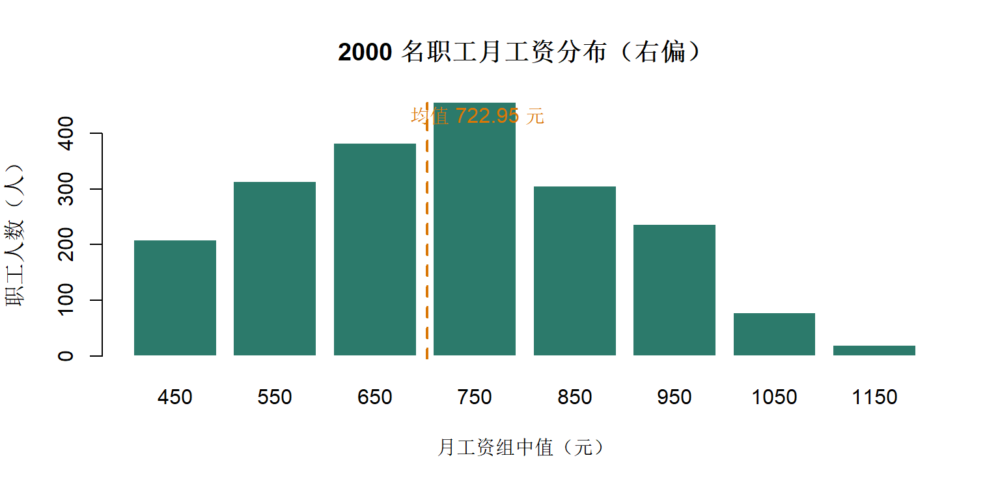
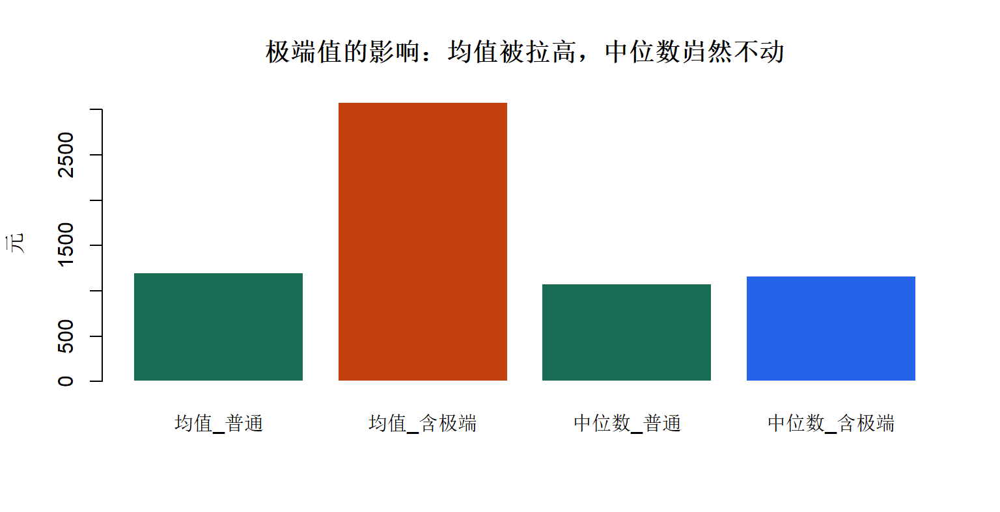
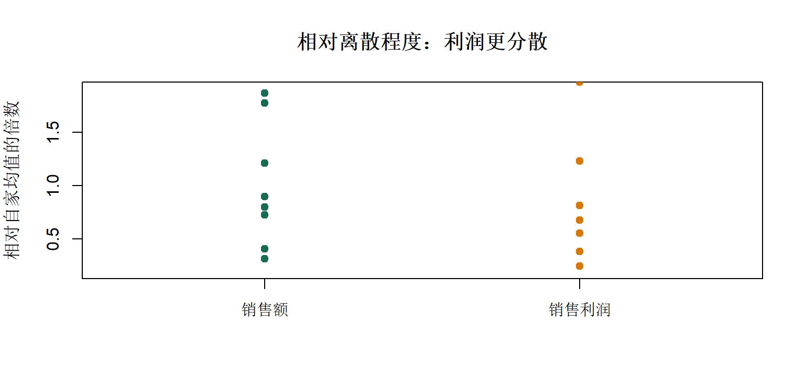

第四章 综合指标分析
《统计学原理》R 语言交互课件
# 《统计学原理》R 课件 · 公共配置
# 每个章节 qmd 通过 ```{r, file="_setup.R"} 方式引入
knitr::opts_chunk$set(
comment = "#>",
collapse = TRUE,
out.width = "88%",
fig.align = "center",
fig.width = 8,
fig.height = 5,
fig.retina = 2,
dev.args = list(family = "sans")
)
# 中文友好的 ggplot 主题
if (requireNamespace("ggplot2", quietly = TRUE)) {
ggplot2::theme_set(
ggplot2::theme_minimal(base_size = 14) +
ggplot2::theme(
plot.title = ggplot2::element_text(face = "bold"),
panel.grid.minor = ggplot2::element_blank()
)
)
}
# 讲义用统一调色板
stat_pal <- c("#1a6b54", "#d97706", "#2563eb", "#c2410c", "#7c3aed", "#0891b2")
第一节 总量指标（绝对指标）
本节从总量指标的概念与作用入手，再按反映总体的内容、反映的时间状态和计量单位三个角度介绍总量指标的分类，最后介绍国民经济统计中几个重要的生产总量指标。
总量指标的分类（一）：总体单位总量与总体标志总量
三、（一）按反映总体的内容分，总量指标按其反映总体内容的不同，可分为两大类：
| 总体单位总量 |
总体内所有单位的总数 |
| 总体标志总量 |
总体中各单位标志值的总和 |
总体单位总量反映总体规模的大小，即总体中包含多少个单位；总体标志总量反映总体某一数量标志的总水平，即各单位标志值加总的结果。例如，研究某企业职工情况时，职工人数是总体单位总量，职工工资总额是总体标志总量。
（图示说明：页面的层级框图（树状结构图）直观展示总量指标按反映总体内容分为总体单位总量与总体标志总量两类及其定义。）
总体单位总量：表明总体中单位数多少的总量指标。它所反映的是总体本身规模的大小。例如：全国运输企业这一总体，它所包括的运输企业的个数，就是一个总体单位总量指标。
总体标志总量：是总体各单位数量标志值之和，是总体单位的某一数量标志值加总而得到的。例如，研究企业生产效益时，若以全体职工为统计总体，则每个工人为总体单位，工人总数是唯一的单位总量，这时企业的总产量、总产值、总成本等多个指标都是标志总量。
注意：
总量指标的分类（二）：时期指标与时点指标
（二）按反映的时间状态分，总量指标分为时期总量指标和时点总量指标。
1、概念
- 时期指标：反映社会经济现象在一段时期内发展过程的累积量（产品产量、产品产值、商品销售额）；
- 时点指标：反映社会经济现象在某一时刻（瞬时时刻）状况上所处的状态或所达到的水平（年末职工人数、某日商品库存量、银行月末储蓄存款余额等）。
2、二者区别（时期指标与时点指标）
（1）时期指标属于流量指标，时点指标属于存量指标；
（2）时期指标可累加，加总后表示更长时期的指标值；时点指标一般不能加总，加总后无实际意义；
（3）时期指标是通过连续统计得到的，时点指标是经过一次观察统计得到的。
总量指标的分类（三）：实物量、价值量与劳动量（续）
三种计量单位各有所长——实物指标具体但不便汇总，价值量指标综合性最强但脱离物质内容，劳动量指标侧重劳动消耗的核算。
国民经济统计中几个重要的生产总量指标（续）
两者的统计范围也不同：社会总产值只包括物质生产部门，而 GDP 则包括非物质生产部门在内的国民经济各个部门。
- 物质生产部门：从事物质资料生产并创造物质财富的国民经济部门的总称，包括：农业、工业、建筑业；直接为生产服务的交通运输业、邮电业、商业等。
- 非物质生产部门：包括服务行业、城市公用事业、金融保险事业；科研、文化、教育、卫生、广播、体育；国家政府机关、军队、宗教团体等。
第二节 相对指标（相对数）
本节先阐明相对指标的意义、表现形式、作用与种类，再重点讲授计划完成、结构、比例、比较、强度、动态六种相对指标的计算方法，最后归纳它们的系统区别与应用原则。
相对指标的意义（概念与表现形式）
一、相对指标的意义：（一）概念
相对指标又称统计相对数，是两个有联系的统计指标对比的比值，反映事物间的数量对比关系。
例如：产品合格率、职工出勤率、人口密度、计划完成百分数等。
相对指标的表现形式为有名数和无名数两种：
- 有名数：主要是将相对指标中的分子和分母的指标计量单位同时使用，形成双重单位，即用双重计量单位表示的复名数。例如：人口密度用人/平方公里表现；平均每人分摊的粮食产量用公斤/人表现，等等。
- 无名数：用倍数、系数、成数、% 等表示。
计量单位的重要性：一个”悖论式证明”
本页通过一个”悖论式证明”说明计量单位在指标计算中的重要性，强调单位运算必须遵循运算规则，不能随意混淆相乘。
错误的证明（求证：1元 = 1分）
解： 因为
\[1\text{元} = 100\text{分} = 10\text{分} \times 10\text{分} = 1\text{角} \times 1\text{角} = 0.1\text{元} \times 0.1\text{元} = 0.01\text{元} = 1\text{分}\]
（画线处 10分×10分 = 1角×1角 是错误所在：单位”分×分”不能直接等于”角”，单位相乘后的量纲已改变。）
证明完毕（错误！）
正确的解法
解：
\[1\text{元} = 100\text{分} = (10 \times 10)\text{分} = 10 \times 10\text{分} = 10 \times 1\text{角} = 10\text{角} = 1\text{元}\]
教学要点： 在计算相对指标或进行单位换算时，数值与计量单位必须作为一个整体参与运算；错解把”10分×10分”等同于”10×10分”，忽略了量纲（单位）的乘除变化，从而得出荒谬结论，说明”单位”在综合指标分析中不可或缺。
计划完成程度相对指标（一）：基本公式与计划数为总量指标
二、相对指标的计算方法：（一）计划完成程度相对指标——反映实际与计划的比较，为无名数。
\[\text{计划完成相对数} = \frac{\text{实际完成数}}{\text{计划任务数}} \times 100\%\]
1、应注意计划指标的形式——（1）计划数为总量指标
当计划数为总量指标（计划任务以总量指标形式给出）时，可直接用实际水平和计划水平对比求得计划完成程度相对指标。它一般适用于考核社会经济现象的规模或水平的计划完成情况：
\[\text{计划完成程度} = \frac{\text{实际完成数}}{\text{计划任务数}} \times 100\%\]
例题： 某地上年国内生产总值为 500 亿元，计划当年国内生产总值要达到 600 亿元，当年实际国内生产总值为 620 亿元，该地当年计划完成程度如何？
解答：
\[\text{计划完成程度} = \frac{620\text{亿元}}{600\text{亿元}} \approx 103\%\]
计算结果约为 103%，说明该地超额完成了当年的国内生产总值计划。计划完成程度相对指标是实际完成数与计划任务数之比，当计划数为总量指标时，直接用实际总量与计划总量对比即可。计算结果大于 100% 表示超额完成计划（对正向指标而言）。
对计划完成程度的评价，并不都是越接近或超过 100% 越好，而要根据计划指标的性质和内容确定：
计划完成程度相对指标（一）：基本公式与计划数为总量指标（续）
- 正指标（产值、产量、销售额等）：超过 100%，说明计划完成情况较好；
- 逆指标（单位成本、费用总额等）：小于 100% 为超额完成计划。
计划完成程度相对指标（二）：计划数为相对指标
（2）计划数为相对指标
当计划数用”增长了”“提高了”或”降低了”“减少了”的百分比表示时，不能直接用实际数与计划数相比，而应先将两者还原为与基期对比的相对水平（还原为实际完成水平），再计算计划完成程度。
计算公式：
\[\text{计划完成程度相对指标} = \frac{1 \pm \text{实际提高/降低百分数}}{1 \pm \text{计划提高/降低百分数}} \times 100\%\]
（增长用”+“，降低用”−“）
例题 1： 某地上年国内生产总值为 500 亿元，计划当年比上年增长 10%，实际增长 12%。问该地计划完成程度如何？
解：
\[\text{计划完成相对数} = \frac{1+12\%}{1+10\%} \times 100\% = 101.8\%\]
即该地计划完成程度为 101.8%，超额完成计划。
例题 2： 某企业计划2016年A产品单位成本比上年降低6%，实际降低3%，则计划完成情况为：
\[\text{计划完成程度} = \frac{1-3\%}{1-6\%} \times 100\% = 103.19\%\]
由于成本降低类指标，实际降低幅度（3%）小于计划降低幅度（6%），计划完成程度为103.19%，说明比计划少完成3.19%，即仅完成了计划的96.81%，未完成计划任务。
计划完成程度相对指标（三）：计划数为平均指标与计划完成情况的评价
（3）计划数为平均指标：直接采用基本公式。
例 某企业计划每人每日平均产量为50件，实际每人每日平均产量为60件，试求该企业产量计划完成程度。
计划完成程度：
\[\frac{60}{50} \times 100\% = 120\%\]
即计划完成120%。
2、应注意的问题
计划完成情况的评价并非都越高越好，是否完成计划取决于指标类型：
- 经济生产量指标——大于100%为超计划完成；
- 经济消耗量指标——小于100%为超计划完成；
- 中性指标——100%左右为完成计划较好。
思考：哪些指标属于中性指标？ 举例：讲课速度；血液检测结果（白细胞数、血红蛋白体积、血小板数量）等身体健康指标。
阅读材料：中长期计划完成程度的检查（水平法与累计法）
【阅读材料】（选读；传统计划统计考点，统计从业与相关考试仍见） 检查五年计划等中长期计划的完成程度时，由于计划任务下达方式不同，分为水平法与累计法两种：
- 水平法：计划任务只规定计划末期（最后一年）应达到的水平。计划完成程度 = 计划末期实际达到水平 ÷ 计划规定末期水平 × 100%。只要在计划期内连续 12 个月（可以跨年度）实际完成数达到计划规定的末期水平，即视为完成计划，其后剩余时间为提前完成计划的时间。
- 累计法：计划任务规定整个计划期累计应达到的总量。计划完成程度 = 实际全期累计完成数 ÷ 计划全期累计数 × 100%。从计划期初累计到某一时刻，实际完成累计数达到计划规定的累计数，即为完成计划，其后剩余时间为提前完成时间。
例 1（水平法）：某地区五年计划规定最后一年国民生产总值应达到 520 亿元，实际执行情况：第 1、2、3 年分别为 320、340、380 亿元；第 4 年上、下半年分别为 200、220 亿元；第 5 年四个季度分别为 140、160、170、180 亿元。从第 4 年下半年到第 5 年第 2 季度，这连续 12 个月的实际完成数为
\[220 + 140 + 160 = 520 \text{（亿元）}\]
阅读材料：中长期计划完成程度的检查（水平法与累计法）（续）
恰好达到末期计划水平 520 亿元，至此已完成计划；计划期还剩两个季度，故提前两个季度完成了五年计划任务。
例 2（累计法）：某地区五年计划规定固定资产投资累计 30 亿元，实际五年分别投入 6、7、8、9、6 亿元。第 1 至第 4 年累计投入
\[6 + 7 + 8 + 9 = 30 \text{（亿元）}\]
恰在第 4 年末完成计划，即提前 1 年完成五年计划规定的投入任务。
教师参考：若掌握逐月数据，水平法还可把提前期精确到天——对计划期后段 24 个月产量做”滚动 12 个月累加”，找到累加值首次达到计划水平的时间窗口；窗口跨月时，假定月内产量均匀分布，按比例折算天数（胡课件 p24–27 例题得”提前 4 个月又 15 天半”，其自注同时提醒：该算法潜藏着”线性递增产能”的假设）。
结构相对指标——反映部分与全部的比较
（二）结构相对指标
定义： 结构相对数是在对总体分组的基础上，以总体总量作为比较标准，求出各组总量占总体总量的比重，来反映总体内部组成情况的综合指标。用 % 表示，为无名数。
计算公式：
\[\text{结构相对指标} = \frac{\text{总体中某部分总量}}{\text{总体总量}} \times 100\%\]
例如：
- 出勤率 = 出勤人数 / 总人数
- 合格率 = 合格数 / 产品总数
比例相对指标——总体内部部分与部分的比较
（三）比例相对指标——结构相对数的变形。
定义：比例相对数是总体中不同部分数量对比的相对指标，用以分析总体范围内各个局部、各个分组之间的比例关系和协调平衡状况。常表示为比例式的形式 A∶B∶C，为无名数。
计算公式：
\[\text{比例相对指标} = \frac{\text{总体中某一部分数值}}{\text{总体中另一部分数值}} \times 100\%\]
注意：比例相对指标的分子与分母有的可以互换，但结构相对指标不能。
例：全国人口普查主要数据
历次全国人口普查的主要数据，展示了总量指标（总人口）与相对指标（性别比）在实际统计资料中的应用。性别比是比例相对指标的一种，通常以女性人口为100，反映男女人口数量的对比关系。
| 1953年第一次人口普查 |
5.82 |
107.6:100 |
| 1964年第二次人口普查 |
6.95 |
105.5:100 |
| 1982年第三次人口普查 |
10.08 |
106.3:100 |
| 1990年第四次人口普查 |
11.34 |
106.6:100 |
| 2000年第五次人口普查 |
12.95 |
106.7:100 |
比例相对指标——总体内部部分与部分的比较（续）
从表中可见，我国人口总量这一总量指标持续增长（由5.82亿增至12.95亿）；而性别比作为相对指标，历次普查均高于100，说明男性人口多于女性人口，比例相对数是反映总体内部比例关系的重要指标。
比较相对指标——同类现象不同空间的比较
（四）比较相对指标
定义：比较相对数是将两个同类指标作静态对比得出的相对指标，表明同类现象在不同条件下的数量对比关系。通常用 % 或倍数表示，多为无名数。
计算公式：
\[\text{比较相对指标} = \frac{\text{甲单位（或地区）的某指标数值}}{\text{乙单位（或地区）同一指标数值}} \times 100\%\]
例如：甲地职工平均收入是乙地职工平均收入的 1.3 倍。
注意（v3 新增）：比较相对数的分子分母何时不宜互换。 一般场合，比较相对数的分子分母可以互换（“甲是乙的 1.3 倍”与”乙是甲的 77%“互补成立）。但当以表现”优秀”的一方作为典型化评价的基准时，分子分母不宜互换：例如某年甲、乙两企业生产同种产品，甲企业工人劳动生产率为 19 307 元，乙企业为 27 994 元，以优者（乙）为基准，比较相对数 = 19307 ÷ 27994 × 100% ≈ 69.0%，结论固定表述为”甲企业劳动生产率比乙企业低 31%“；不宜再换成”乙是甲的 145%“重复陈述同一结论，以免评价口径游移。
结构相对数、比例相对数、比较相对数的主要区别
1、分子和分母的内容不同
- 结构相对数：是同一时间同一总体内部数量与总体总量的对比，分母是总体总量。
- 比例相对数：是同一时间同一总体内，部分数量与部分数量的对比，分母是部分数量。
- 比较相对数：是同一时间不同总体同类指标在空间上的对比，分母是与分子不同空间的同类指标。
2、说明的问题不同
- 结构相对数：用各组总量占总体总量的比重，来反映总体内部的组成情况。
- 比例相对数：说明总体内各部分间的相互关系。
- 比较相对数：说明某种现象在不同空间下发展的不均衡程度。
动态相对数——反映现象不同时间的比较
（六）动态相对数
动态相对数又称发展速度，是同类事物的报告期水平与基期水平对比所得，反映事物发展变化的速度。通常用 % 表示，为无名数，用来反映现象的数量在时间上的变动程度。
特点：同一指标不同时期的指标值对比。常把用来作为比较标准的时期称为“基期”，而把同基期对比的时期称为“报告期”或“计算期”。
计算公式：
\[\text{动态相对数（发展速度）} = \frac{\text{报告期指标数值}}{\text{基期指标数值}} \times 100\%\]
与增长速度的关系：
\[\text{增长速度} = \text{发展速度} - 1\]
例如：某地区粮食总产量 2008 年为 2000 万吨，2009 年为 2080 万吨。粮食总产量 2009 年比 2008 年的
- 发展速度 \(= \frac{2080}{2000} \times 100\% = 104\%\)
- 增长速度 \(= 104\% - 100\% = 4\%\)
表明该地区粮食总产量在两年间的变化状况。
六种相对数的系统比较
按比较的时期与比较的对象两个核心维度，可将六种相对数逐层归类：
- 第一层：按比较时期划分——不同时期比较 → 动态相对数；同一时期比较 → 以下各类。
- 第二层：同一时期内，按比较现象划分——不同现象比较 → 强度相对数；同类现象比较 → 以下各类。
- 第三层：同类现象比较中，按比较总体划分——不同总体比较 → 比较相对数；同一总体中 → 以下三类。
- 第四层：同一总体中，按部分与部分、部分与总体、实际与计划的比较划分：
| 部分与部分比较 |
比例相对数 |
| 部分与总体比较 |
结构相对数 |
| 实际与计划比较 |
计划完成相对数 |
判断相对指标类型时，抓住逐层收窄的判断链条：先问是否同一时期，再问是否同类现象，再问是否同一总体，最后问比较的是部分与部分、部分与总体还是实际与计划，即可准确定性。
（图示说明：以层级分叉的结构示意图逐层展示六种相对数的分类判据，帮助学生建立系统的分类比较框架。）
相对指标的应用原则
三、应用原则：1、必须注意统计的可比性
可比性指两个对比指标所表明的经济内容，包括总体范围、计算方法、计量单位必须可比。
例1： 不能将某人当年剔除了通胀因素后的实际收入和往年的名义收入直接做对比。（二者经济内容不同——一个是实际口径，一个是名义口径，不可直接相比。）
例2： 世界各国产业划分标准不同，我国第一产业不包括采掘工业，而很多国家把采掘工业划入到一产范围中，这样，两者就不能直接对比。（总体范围不同导致指标不可比。）
教学要点： 进行相对指标对比分析时，须先检查两个指标的总体范围、计算方法、计量单位是否一致，否则对比结果毫无意义。
2、相对指标要与总量指标结合运用
总量指标反映现象总水平，但不能反映现象间的差别程度；相对指标便于反映现象间的差异，但不便于反映绝对数量差别。两者需结合运用，才能对现象有全面的认识。
注意： 当两个对比的绝对数值较小时，不适宜用计算相对指标来分析。
3、各种相对指标结合运用
把六种相对指标结合运用，才能从水平、结构、比例、空间、强度、时间六个侧面完整地认识一个总体。结合运用时，还须辨明“百分比”与”百分点”这两个易混概念：
相对指标的应用原则（续）
注意（v3 新增）：百分点（percentage point）与百分比（percent）之辨。 比较两个相对数时，是否适宜相除再求一个新相对数，应视情况而定：若相除有实际意义，则相除；若不宜相除，只宜相减求差数，用百分点表示——百分点即百分比中相当于 1% 的单位。例如，某地 GDP 增长速度由上年的 4% 提高到今年的 6%，应表述为”提高了 2 个百分点”，而不能说”提高了 2%“（若按”提高 2%“理解，只有 4%×(1+2%)≈4.08%）。又如前文例题中计划完成程度 101.8% 比计划水平 100% 高出 1.8 个百分点。报告与新闻中混用二者是常见错误，须分清用除法（发展速度型比较）还是用减法（水平型比较）。
第三节 平均指标（平均数）
本节先阐明平均指标的意义、特点、作用与种类，再依次讲授算术平均数、调和平均数、几何平均数三种数值平均数与众数、中位数两种位置平均数的计算方法（位置平均数部分并增学四分位数与五数概括），最后归纳常用平均数的适用场合、位置平均数与算术平均数的关系以及应用平均指标的原则。
平均指标的概念
一、平均指标的意义和种类：1、概念
平均指标反映同质总体各单位在一定时间、地点条件下的一般水平的综合指标，是总体内各单位参差不齐的标志值的代表值，也是对变量分布集中趋势的测定。
教学要点：
- 平均指标是一个综合指标，刻画总体的一般水平；
- 它对各单位标志值的差异起”代表”作用（代表值）；
- 从分布角度看，平均指标测定的是变量分布的集中趋势。
数据分布的特征与适用的描述统计量（续）
- 集中趋势反映数据向中心值靠拢的程度，可用众数（出现次数最多的值）、中位数（位置居中的值）和平均数（算术均值）来度量；
- 离散程度反映数据的分散状况，包括异众比率（配合众数使用）、四分位差（配合中位数使用）、极差、平均差、方差或标准差以及用于比较不同量纲数据离散程度的离散系数；
- 分布形状反映分布是否对称及尖峭程度，用偏态系数衡量偏斜方向和程度，用峰态系数衡量分布的尖峰或扁平程度。
选择统计量时应与数据分布特征相匹配，三者结合才能全面刻画一组数据的分布。
v3 更新提示：表中”异众比率、四分位差”两个离散测度值见第四节新增小节，“偏态系数、峰态系数”见本章第五节（v3 新增）；各测度值对数据类型的适用规则遵循”低层次数据的测度值适用于高层次数据，反之不行”，准入依据见第 1 章”计量尺度 × 统计方法准入表”。
（图示说明：以树状结构图直观呈现三大分布特征与各描述统计量的对应关系，帮助学生建立系统的知识框架。）
其中，集中趋势是指一组数据向某一中心值靠拢的程度，衡量集中趋势的指标——平均指标。在统计分析中，我们常用平均指标来描述数据的集中趋势，反映一组数据的一般水平或中心位置。
数据分布的特征与适用的描述统计量（续）
（图示说明：页面上用箭头与菱形框构成的示意图，直观表明’衡量集中趋势的指标’即’平均指标’。）
平均指标的特点
2、特点
（1）同质性：分子分母为同一总体，总体内各单位性质相同。也就是说，只有性质相同的单位才能构成计算平均指标的总体。
（2）抽象性：总体内各同质单位虽然存在数量差异，但在计算平均数时并不考虑这种差异，即把这种差异平均化了。平均数是对各单位数量差异的抽象概括，它掩盖了总体内部的差异。
（3）代表性：尽管各单位的标志值大小不一，但我们可以用平均指标值来代表所有标志值。这就是平均指标的代表性特点。
例子：
- eg. 姚明上赛季平均每场上场 29 分钟，平均每场得分 13 分。
- 康隆农场 2003 年平均从业人员 700 人。
- 兴隆铁矿年均产量 400 万吨。
以上例子说明，虽然每场比赛的得分、每年各时期的人数与产量各不相同，但用一个平均数就能概括地代表总体的一般水平，体现平均指标的代表性作用。
平均指标的作用
3、平均指标的作用
（1）便于进行对比分析。 例如：工资总额不可比，而平均工资可比。总量指标受总体规模影响，平均指标消除了规模差异，便于不同总体之间进行比较。
（2）可以作为判断事物的标准或依据。 例如：劳动定额，包括时间定额、产量定额。平均指标代表了总体的一般水平，可作为评价和判断的参照标准。
（3）可以推算其它有关指标数值。 例如：用部分粮食的平均产量和土地面积推断总产量。即利用平均指标与相关指标的关系进行推算。
平均指标的种类
4、种类
（1）按时间状况划分：静态平均数、动态平均数。
（2）按计算方法划分：数值平均数、位置平均数。
其中，常用的数值平均数有：算术平均数、调和平均数、几何平均数等；位置平均数有：众数、中位数和分位数等几种。
算术平均数的基本公式与简单算术平均数
二、算术平均数
基本公式：
\[\text{算术平均数} = \frac{\text{总体标志总量}}{\text{总体单位总量}}\]
（一）简单算术平均数
适用条件： 当掌握的资料是总体各单位的标志值（变量值）时，采用简单算术平均数计算。
\[\bar{x} = \frac{x_1 + x_2 + x_3 + \cdots + x_n}{n} = \frac{\sum x_i}{n}\]
其中：\(x_i\) 为总体各单位的标志值（变量值），\(n\) 为总体单位数。即将各单位标志值直接相加，除以单位个数，得到算术平均数。
【例3-1】简单算术平均数的应用
例题： 假定有某公司 50 名员工的月工资资料（单位：元）如下，计算该公司员工的平均工资。
算术平均数的基本公式与简单算术平均数（续）
| 1000 |
1000 |
1000 |
1000 |
1000 |
1000 |
1200 |
1200 |
1200 |
| 1200 |
1200 |
1200 |
1200 |
1200 |
1200 |
1200 |
1200 |
1200 |
| 1200 |
1200 |
1200 |
1200 |
1200 |
1200 |
1200 |
1200 |
1500 |
| 1500 |
1500 |
1500 |
1500 |
1500 |
1500 |
2000 |
2000 |
2000 |
| 2000 |
2000 |
2500 |
2500 |
2500 |
|
|
|
|
解： 资料给出的是 50 个单位各自的标志值（月工资），可直接用简单算术平均数公式，将全部工资加总得到标志总量，再除以员工人数：
\[\bar{x} = \frac{\sum_{i=1}^{50} x_i}{50} = \frac{800 + 800 + \cdots + 2500}{50} = \frac{66000}{50} = 1320 \text{（元/人）}\]
算术平均数的基本公式与简单算术平均数（续）
即该公司员工的平均工资为 1320 元/人。
加权算术平均数
（二）加权算术平均数：1. 计算公式
当掌握的资料已编成变量数列（分组资料）时，不能把各变量值直接简单相加，而应以各组频数（权数）\(f\) 对变量值加权，用公式表示：
\[\bar{x} = \frac{x_1 f_1 + x_2 f_2 + \cdots + x_n f_n}{f_1 + f_2 + \cdots + f_n} = \frac{\sum x f}{\sum f}\]
若将各组权数改用频率（比重）\(\dfrac{f}{\sum f}\) 表示，公式又可写成：
\[\bar{x} = x_1 \frac{f_1}{\sum f} + x_2 \frac{f_2}{\sum f} + \cdots + x_n \frac{f_n}{\sum f} = \sum \left( x \cdot \frac{f}{\sum f} \right)\]
即加权算术平均数既可按绝对权数（频数）形式 \(\dfrac{\sum xf}{\sum f}\) 计算，也可按比重权数（频率）形式 \(\sum \left( x \cdot \dfrac{f}{\sum f} \right)\) 计算，两种表达方式等价。
【例】某公司员工工资情况——加权算术平均数的计算
表 某公司员工工资情况表
加权算术平均数（续）
| 800 |
5 |
0.10 |
4000 |
80 |
| 1000 |
10 |
0.20 |
10000 |
200 |
| 1200 |
20 |
0.40 |
24000 |
480 |
| 1500 |
7 |
0.14 |
10500 |
210 |
| 2000 |
5 |
0.10 |
10000 |
200 |
| 2500 |
3 |
0.06 |
7500 |
150 |
| 合计 |
50 |
1.00 |
66000 |
1320 |
方法一：以员工数（频数）\(f\) 为权数加权计算
\[\bar{x} = \frac{\sum x f}{\sum f} = \frac{800 \times 5 + 1000 \times 10 + 1200 \times 20 + 1500 \times 7 + 2000 \times 5 + 2500 \times 3}{5 + 10 + 20 + 7 + 5 + 3} = \frac{66000}{50} = 1320 \text{（元/人）}\]
方法二：以员工比重（频率）\(f/\sum f\) 为权数加权计算
思考：频数对均值的影响大，还是频率对均值的影响大？
设有三组资料，变量值均为 \(X = 4, 5, 6\)，比较其频数与频率分布对均值的影响：
（1） \(\bar{x} = 5\)
| 4 |
10 |
25.0 |
| 5 |
20 |
50.0 |
| 6 |
10 |
25.0 |
| 合计 |
40 |
100.0 |
（2） \(\bar{x} = 5\)
| 4 |
20 |
25.0 |
| 5 |
40 |
50.0 |
| 6 |
20 |
25.0 |
| 合计 |
80 |
100.0 |
（3） \(\bar{x} = 4.75\)
| 4 |
20 |
50.0 |
| 5 |
10 |
25.0 |
| 6 |
10 |
25.0 |
| 合计 |
40 |
100.0 |
分析： 比较（1）与（2），各组频数同比例扩大（10→20、20→40），但频率分布不变，均值不变，仍为 5；比较（1）与（3），总频数相同（均为 40），但频率分布改变了，均值随之变为 4.75。可见频率分布不变时均值不变，频率分布变了均值就会变。因此，严格地说，权数应指频率。
由组距式数列计算平均数
3. 由组距式数列计算平均数
当资料为组距式变量数列时，用各组的组中值代替变量值进行加权平均计算，但需假定每组的变量值在组内是均匀分配的。由于这一假定与实际分布往往有出入，这样计算出来的平均数只是一个近似值。
【例】某企业 2000 名职工按月工资分组（组距式数列计算加权算术平均数）
资料为组距式数列，以各组的组中值 \(x\) 代表各组变量值，以职工人数 \(f\) 为权数，列表计算：
| 500 以下 |
450 |
208 |
93600 |
| 500-600 |
550 |
314 |
172700 |
| 600-700 |
650 |
382 |
248300 |
| 700-800 |
750 |
456 |
342000 |
| 800-900 |
850 |
305 |
259250 |
| 900-1000 |
950 |
237 |
225150 |
| 1000-1100 |
1050 |
78 |
81900 |
| 1100 以上 |
1150 |
20 |
23000 |
| 合计 |
—— |
2000 |
1445900 |
按加权算术平均数公式计算平均月工资：
由组距式数列计算平均数（续）
\[\bar{x} = \frac{x_1 f_1 + x_2 f_2 + \cdots + x_n f_n}{f_1 + f_2 + \cdots + f_n} = \frac{\sum x f}{\sum f} = \frac{1445900}{2000} = 722.95 \text{（元）}\]
即该企业职工平均月工资约为 722.95 元（由于以组中值代替组内各变量值，此结果为近似值）。
算术平均数的数学性质
（三）算术平均数的数学性质
性质 1：各变量值与均值的离差之和等于零
- 未分组资料：\(\sum (x - \bar{x}) = 0\)
- 分组资料：\(\sum (x - \bar{x}) f = 0\)
性质 2：各变量值与均值的离差平方和为最小
- 未分组资料：\(\sum (x - \bar{x})^2 = \text{最小}\)
- 分组资料：\(\sum (x - \bar{x})^2 f = \text{最小}\)
这两条性质表明算术平均数处于全部变量值的中心位置：正负离差相互抵消（性质 1），且对均值的离差平方和比对任意其他数的离差平方和都小（性质 2），这是算术平均数作为总体代表值的重要理论依据。
R 实践 · 组距式数列的加权平均数（2000 名职工例）
# 某企业 2000 名职工按月工资分组：组中值 x 与职工人数 f
x <- c(450, 550, 650, 750, 850, 950, 1050, 1150)
f <- c(208, 314, 382, 456, 305, 237, 78, 20)
c(职工总数 = sum(f), 工资总额 = sum(x * f),
平均工资 = weighted.mean(x, f)) # ≈ 722.95 元
#> 职工总数 工资总额 平均工资
#> 2000.00 1445900.00 722.95
barplot(f, names.arg = x, col = "#2c7a6b", border = "white",
xlab = "月工资组中值（元）", ylab = "职工人数（人）",
main = "2000 名职工月工资分布（右偏）")
mean_pos <- weighted.mean(seq_along(x), f) # 均值在条形坐标中的位置
abline(v = mean_pos, lty = 2, col = "#d97706", lwd = 2)
text(mean_pos + 0.6, max(f) * 0.95, "均值 722.95 元", col = "#d97706")

分布右偏时，少数高工资把均值”拉高”——此时中位数（下一节）往往比均值更能代表”典型工资水平”。
调和平均数的概念与计算公式
三、调和平均数
定义： 调和平均数是各个标志值倒数的算术平均数的倒数，又称为倒数平均数。
应用条件： 调和平均数主要应用于变量数列中缺少次数（频数）资料、而已知标志总量（各组标志值与其对应总量）的情形，此时可用标志总量作为权数来计算平均数。
（1）简单调和平均数——适用于未分组数列
计算公式：
\[\overline{X}_H = \frac{1}{\dfrac{\dfrac{1}{X_1} + \dfrac{1}{X_2} + \cdots + \dfrac{1}{X_N}}{N}} = \frac{N}{\dfrac{1}{X_1} + \dfrac{1}{X_2} + \cdots + \dfrac{1}{X_N}} = \frac{N}{\sum \dfrac{1}{X}}\]
[例] 某人分别花一元钱买了三种苹果，三种苹果的价格分别为 2 元/斤、1.8 元/斤、1.5 元/斤。试计算其购买的三种苹果的平均价格。
解： 三种苹果各花 1 元，购买金额相同而购买数量不同（分别为 \(1/2\) 斤、\(1/1.8\) 斤、\(1/1.5\) 斤），应用简单调和平均数：
调和平均数的概念与计算公式（续）
\[\overline{X}_H = \frac{3}{\dfrac{1}{2} + \dfrac{1}{1.8} + \dfrac{1}{1.5}} = \frac{3}{1.722} = 1.74 \text{（元/斤）}\]
即三种苹果的平均价格为 1.74 元/斤。
（2）加权调和平均数——适用于分组数列
计算公式：
\[\overline{X}_H = \frac{1}{\dfrac{\dfrac{1}{X_1} M_1 + \dfrac{1}{X_2} M_2 + \cdots + \dfrac{1}{X_N} M_N}{M_1 + M_2 + \cdots + M_N}} = \frac{M_1 + M_2 + \cdots + M_N}{\dfrac{1}{X_1} M_1 + \dfrac{1}{X_2} M_2 + \cdots + \dfrac{1}{X_N} M_N} = \frac{\sum M}{\sum \dfrac{M}{X}}\]
其中 \(X_i\) 为各组标志值，\(M_i\) 为各组权数（标志总量），\(N\) 为组数。
调和平均数的概念与计算公式（续）
注意（v3 新增）：调和平均数的权数 \(M\) 是”各组标志值总量”。 加权调和平均公式中的权数 \(M_i = X_i f_i\)，即第 \(i\) 组的标志值总量（该组标志值 × 该组次数）。它不是各组变量值出现的次数（频数），也不是整个总体的标志总量。认清这一点，才能在”已知各组成交额求平均价格”一类问题中，正确地把各组标志值总量放入 \(M\)、把价格放入 \(X\)。
例题：算术平均与调和平均的选用
【例】求某种商品三种零售价格的平均价格——用同一组价格资料，对比算术平均与调和平均两种算法。
（一）算术平均——已知销售量（次数）资料
\[\bar{x} = \frac{\sum x_i f_i}{\sum f_i} = \frac{3.3 \times 3 + 2.5 \times 4 + 2.0 \times 5}{3 + 4 + 5} = \frac{29.9}{12} = 2.492 \text{（元）}\]
（二）调和平均——已知销售额（标志总量）资料
| 3.3 |
9.9 |
| 2.5 |
10 |
| 2.0 |
10 |
| 合计 |
30 |
\[\bar{x}_H = \frac{\sum m_i}{\sum \dfrac{1}{x_i} m_i} = \frac{9.9 + 10 + 10}{\dfrac{1}{3.3} \times 9.9 + \dfrac{1}{2.5} \times 10 + \dfrac{1}{2.0} \times 10} = \frac{30}{12.03} = 2.492 \text{（元）}\]
例题：算术平均与调和平均的选用（续）
教学要点： 当掌握的权数资料是销售量（次数、频数）时，用加权算术平均数；当掌握的权数资料是销售额（标志总量）时，用加权调和平均数。两种方法计算的平均价格一致，说明调和平均数是算术平均数的变形，选用哪种公式取决于所掌握的权数资料形式。
【例】某蔬菜批发市场三种蔬菜的日成交数据如表，计算三种蔬菜该日的平均批发价格。
某日三种蔬菜的批发成交数据
| 甲 |
1.20 |
18000 |
15000 |
| 乙 |
0.50 |
12500 |
25000 |
| 丙 |
0.80 |
6400 |
8000 |
| 合计 |
— |
36900 |
48000 |
解： 已知资料为各组批发价格 \(M_i\) 与成交额 \(M_i f_i\)（标志总量），缺少成交量（次数）资料，各组成成交量需由 \(\dfrac{M_i f_i}{M_i}\) 推算（如甲：\(18000 \div 1.20 = 15000\) 公斤），故采用加权调和平均数计算：
例题：算术平均与调和平均的选用（续）
\[\text{平均批发价格} = \frac{\sum M_i f_i}{\sum \dfrac{M_i f_i}{M_i}} = \frac{\text{成交总额}}{\sum \dfrac{\text{成交额}}{\text{批发价格}}} = \frac{36900}{48000} = 0.769 \text{（元/斤）}\]
即三种蔬菜该日的平均批发价格为 0.769 元/斤。
总结：算术平均法与调和平均法的选用
- 凡是掌握分母资料时，用算术平均法；
- 凡是掌握分子资料时，用调和平均法。
即：若已知的是基本公式中分母上的资料（如总体单位数、销售量等次数资料），采用加权算术平均数 \(\bar{x} = \dfrac{\sum x f}{\sum f}\)；若已知的是分子上的资料（如标志总量、销售额等），则采用加权调和平均数 \(\bar{x} = \dfrac{\sum m}{\sum \frac{m}{x}}\)。
几何平均数的概念与公式
四、几何平均数：1. 概念
几何平均数是 \(n\) 个变量值连乘积的 \(n\) 次方根。
简单几何平均数：
\[\overline{x}_G = \sqrt[n]{\prod_{i=1}^{n} x_i}\]
加权几何平均数：
\[\overline{x}_G = \sqrt[\sum f_i]{\prod_{i=1}^{n} x_i^{f_i}}\]
2. 前提条件
总量等于各分量乘积。适用于求平均合格率、平均利息率、平均发展速度等场合。
例题：流水生产线的平均合格率
例 1： 某流水生产线有前后衔接的五道工序，某日各工序产品的不合格率分别为 5%、8%、10%、15%、20%，求整个流水线平均产品合格率。
解题思路： 五道工序前后衔接，后一道工序加工的是前一道工序的合格品，整条流水线的总合格率等于各工序合格率的连乘积（总量等于各分量乘积），故应用几何平均法而非算术平均法。
各工序合格率依次为 95%、92%、90%、85%、80%（即 0.95、0.92、0.90、0.85、0.80），代入简单几何平均数公式：
\[\bar{x}_G = \sqrt[5]{0.95 \times 0.92 \times 0.90 \times 0.85 \times 0.80} = 88.24\%\]
即整个流水线的平均产品合格率为 88.24%。
引伸题：各工序独立作业时的平均合格率
假定该流水线拥有的是五个独立作业的工序，每道工序的产量均为 100 件，且该月份五个工序产品的合格率也分别为 95%、92%、90%、85% 和 80%，求该流水线各产品的平均合格率。
分析： 此时五道工序相互独立、不再是前后衔接的连乘关系，各工序产量相同（均为 100 件，权数相等），故不能用几何平均法，而应采用加权算术平均法：
例题：流水生产线的平均合格率（续）
\[\bar{x} = \frac{\sum x f}{\sum f} = \frac{100 \times (0.95 + 0.92 + 0.9 + 0.85 + 0.8)}{100 \times 5}\]
本例说明：同样是求平均合格率，工序前后衔接（总量为各分量之积）时用几何平均法，工序独立、产量相同（总量为各分量之和）时用算术平均法。
例题：复利计息的平均年利率
例 2： 某金融机构以复利方式计息。近 12 年来的年利率有：4 年为 3%、2 年为 5%、2 年为 8%、3 年为 10%、1 年为 15%。求 12 年的平均年利率。
解： 复利计息时，12 年的总本利系数等于各年本利系数的连乘积，故应用加权几何平均数（各年利率的权数为年数）：
\[\sqrt[4+2+2+3+1]{1.03^{4} \times 1.05^{2} \times 1.08^{2} \times 1.10^{3} \times 1.15^{1}} = 106.82\%\]
平均年利率 \(= 106.82\% - 1 = 6.82\%\)
引申：单利计息的情形
假定该例中是按单利计息，最初本金为 \(V_0\)，求解平均年利率。
单利计息时利息总量等于各年利息之和，应用加权算术平均法：
\[\bar{x} = \frac{\sum m}{\sum f} = \frac{\sum x f}{\sum f} = \frac{0.03 \times 4 + 0.05 \times 2 + 0.08 \times 2 + 0.1 \times 3 + 0.15 \times 1}{4 + 2 + 2 + 3 + 1} = 6.9\%\]
可见计息方式不同，平均年利率的计算方法也不同：复利用几何平均法，单利用加权算术平均法。
几何平均数的对数形式
3. 几何平均数的对数等于对数的算术平均
几何平均数的对数等于各变量值对数的算术平均，因此几何平均数又称为对数平均数。
简单几何平均数：
\[\log \bar{x}_G = \frac{1}{n} \left( \log x_1 + \log x_2 + \cdots + \log x_n \right)\]
加权几何平均数：
\[\log \bar{x}_G = \frac{1}{\sum f} \left( f_1 \log x_1 + f_2 \log x_2 + \cdots + f_k \log x_k \right)\]
即先对变量值取对数、按权数加权平均，再取反对数，即可把几何平均数的运算转化为算术平均数的运算，便于开高次方时的实际计算。
对简单几何平均数 \(G = \sqrt[n]{x_1 x_2 \cdots x_n}\) 两边取对数：
\[\lg X_G = \lg \sqrt[n]{x_1 x_2 \cdots x_n} = \frac{1}{n} \left( \lg x_1 + \lg x_2 + \cdots + \lg x_n \right) = \frac{\sum \lg x}{n}\]
结论： 可见几何平均数的对数是各个变量值的对数的算术平均数。
计算方法： 求出几何平均数的对数后，查反对数表找出真数，即为几何平均数。
R 实践 · 调和平均数与几何平均数：教材两例重算
掌握的是每份花了多少钱时用调和平均；总量是连乘出来的（合格率衔接、复利）时用几何平均。
# 各花 1 元买三种苹果，价格 2、1.8、1.5 元/斤
price <- c(2, 1.8, 1.5)
harm <- length(price) / sum(1 / price)
# 五道前后衔接工序的合格率：几何平均
pass <- c(0.95, 0.92, 0.90, 0.85, 0.80)
geom <- prod(pass) ^ (1 / length(pass))
# 同样五个合格率，若是五道独立工序、产量相同：算术平均
c(苹果平均价格 = round(harm, 2),
衔接工序平均合格率 = round(geom, 4),
独立工序平均合格率 = round(mean(pass), 4))
#> 苹果平均价格 衔接工序平均合格率 独立工序平均合格率
#> 1.7400 0.8824 0.8840
# 复利：4 年 3%、2 年 5%、2 年 8%、3 年 10%、1 年 15%
growth <- c(1.03, 1.05, 1.08, 1.10, 1.15)
years <- c(4, 2, 2, 3, 1)
avg_growth <- exp(sum(years * log(growth)) / sum(years))
c(平均发展速度 = round(avg_growth, 4),
平均年利率 = round(avg_growth - 1, 4))
#> 平均发展速度 平均年利率
#> 1.0685 0.0685
# 精确值为 106.85% − 1 = 6.85%；教材按中间步骤舍入写成 6.82%
衔接工序把合格率连乘，用几何平均（约 88.24%）。独立工序是把合格件数相加，用算术平均。苹果例三种花销相同，调和平均约 1.74 元/斤，和“总花费 ÷ 总斤数”是同一件事。
众数的计算
2. 众数的计算
（1）分类数据的众数
不同品牌饮料的频数分布
| 可口可乐 |
15 |
0.30 |
30 |
| 旭日升冰茶 |
11 |
0.22 |
22 |
| 百事可乐 |
9 |
0.18 |
18 |
| 汇源果汁 |
6 |
0.12 |
12 |
| 露露 |
9 |
0.18 |
18 |
| 合计 |
50 |
1 |
100 |
解： 这里的变量为”饮料品牌”，这是个分类变量，不同类型的饮料就是变量值。
所调查的 50 人中，购买可口可乐的人数最多，为 15 人，占总被调查人数的 30%，因此众数为”可口可乐”这一品牌，即
\[M_o = \text{可口可乐}\]
（2）顺序数据的众数
甲城市家庭对住房状况评价的频数分布
| 非常不满意 |
24 |
8 |
| 不满意 |
108 |
36 |
| 一般 |
93 |
31 |
| 满意 |
45 |
15 |
| 非常满意 |
30 |
10 |
| 合计 |
300 |
100.0 |
解： 这里的数据为顺序数据，变量为”回答类别”。
甲城市中对住房表示不满意的户数最多，为 108 户，因此众数为”不满意”这一类别，即
众数的计算（续）
\[M_o = \text{不满意}\]
（3）单项式数列确定众数：只需找出出现次数最多的标志值（变量值），即为众数。
（4）组距数列确定众数：以频数之差计算的比例分割众数组组距。
上限公式：
\[M_o = U - \frac{d_2}{d_1 + d_2} \times i\]
下限公式：
\[M_o = L + \frac{d_1}{d_1 + d_2} \times i\]
式中：
- \(L\) —— 众数组下限；
- \(d_1\) —— 众数组次数与上一组次数之差；
- \(d_2\) —— 众数组次数与下一组次数之差；
- \(i\) —— 众数组的组距；
- \(U\) —— 众数组上限。
例题：组距数列的众数（月收入分布）
频数分布表：
| 频数 |
40 |
90 |
110 |
105 |
70 |
50 |
35 |
频数最多的组为众数组（<800～<1100 组，频数 110），众数组次数与上一组次数之差 \(d_1 = 110 - 90 = 20\)，与下一组次数之差 \(d_2 = 110 - 105 = 5\)。
下限公式计算步骤：
① 求比例：
\[\frac{d_1}{d_1 + d_2} = \frac{20}{20 + 5} = 0.8\]
② 分割众数组的组距：
\[0.8 \times (1100 - 800) = 240 \text{（元）}\]
③ 加下限，即：
\[M_o = 800 + 240 = 1040 \text{（元）}\]
即所求众数为 1040 元。
众数几何位置的图示
将上例的频数分布绘制为直方图：横轴为月收入（元），刻度 500、800、1100、1400、1700、2000；纵轴为频数 \(f\)（人数），刻度 50、100、150。
例题：组距数列的众数（月收入分布）（续）
在众数组（800～1100）与相邻两组的直方条顶部，分别以 \(d_1\)、\(d_2\) 标出众数组次数与前后两组次数之差，并作交叉对角线，两线交点在横轴上的投影即为众数位置 1040 元，与按下限公式 \(M_o = L + \dfrac{d_1}{d_1 + d_2} \times i = 800 + \dfrac{20}{20 + 5} \times 300 = 1040\)（元）计算的结果一致。
图示直观说明：众数在众数组内的位置由 \(d_1\) 与 \(d_2\) 的比例决定，众数组次数比前一组多得越多（\(d_1\) 越大），众数越靠近上限；比后一组多得越多（\(d_2\) 越大），众数越靠近下限。
（图示说明：以直方图相邻直条顶端的交叉对角线和 d₁、d₂ 标注，直观演示众数按频数差比例在众数组内插值定位的几何原理，与下限公式计算结果 1040 元相互印证。）
例题：50 名工人日加工零件数的众数
表 某车间 50 名工人日加工零件数分组表
| 105~110 |
3 |
3 |
| 110~115 |
5 |
8 |
| 115~120 |
8 |
16 |
| 120~125 |
14 |
30 |
| 125~130 |
10 |
40 |
| 130~135 |
6 |
46 |
| 135~140 |
4 |
50 |
| 合计 |
50 |
— |
解： 频数最多的组为 120~125（频数 14），即众数组，其下限 \(L = 120\)，组距 \(i = 5\)；众数组次数与前一组次数之差 \(d_1 = 14 - 8\)，与后一组次数之差 \(d_2 = 14 - 10\)。按组距数列众数下限公式插值：
\[M_o = L + \frac{d_1}{d_1 + d_2} \times i = 120 + \frac{14 - 8}{(14 - 8) + (14 - 10)} \times 5 = 123 \text{（个）}\]
即 50 名工人日加工零件数的众数约为 123 个。
中位数的概念与特点
六、中位数：1. 概念
在同一总体中，将各总体单位的某一数量标志值按大小顺序排列，处于中间位置的标志值称为中位数，记作 \(M_e\)。
中位数将全部标志值分成两部分：中位数以前和中位数以后的标志值各占 50%，即一半单位的标志值小于等于 \(M_e\)，另一半单位的标志值大于等于 \(M_e\)。
（图示说明：页面下方的示意图以 Me 为界、两侧各标 50% 的横条，直观展示中位数把按大小排列的标志值序列等分为两半的位置特征。）
2. 中位数的特点
（1）不受极端值的影响。
（2）主要用于顺序数据，也可用于数值型数据，但不能用于分类数据。
（3）各变量值与中位数的离差绝对值之和最小，即
\[\sum_{i=1}^{n} \left| x_i - M_e \right| = \min\]
顺序数据与原始数据的中位数
3. 中位数的计算：（1）顺序数据的中位数
中位数位置公式：
\[\text{中位数位置} = \frac{n + 1}{2}\]
再由累计频数确定中位数所在的组别。
甲城市家庭对住房状况评价的频数分布
| 非常不满意 |
24 |
24 |
| 不满意 |
108 |
132 |
| 一般 |
93 |
225 |
| 满意 |
45 |
270 |
| 非常满意 |
30 |
300 |
| 合计 |
300 |
— |
解： 中位数的位置为
\[\frac{300 + 1}{2} = 150.5\]
从累计频数看，中位数在”一般”这一组别中（累计频数 132 < 150.5 ≤ 225）。
中位数为 \(M_e =\) 一般。
（2）原始数据的中位数
中位数位置公式同上。
【例】9 个家庭的人均月收入数据
- 原始数据：1500、750、780、1080、850、960、2000、1250、1630
- 排序：750、780、850、960、1080、1250、1500、1630、2000
顺序数据与原始数据的中位数（续）
| 数据 |
750 |
780 |
850 |
960 |
1080 |
1250 |
1500 |
1630 |
2000 |
解： 中位数位置为
\[\text{位置} = \frac{n + 1}{2} = \frac{9 + 1}{2} = 5\]
即中位数是排序后第 5 个位置上的数据：
\[M_e = 1080\]
【例】10 个家庭的人均月收入数据（\(n\) 为偶数时的中位数）
- 排序：660、750、780、850、960、1080、1250、1500、1630、2000
- 位置：1、2、3、4、5、6、7、8、9、10
解： 中位数位置为
\[\text{位置} = \frac{n + 1}{2} = \frac{10 + 1}{2} = 5.5\]
\(n = 10\) 为偶数，中位数位于第 5、6 两个数据之间，取这两个数据的算术平均：
\[\text{中位数} = \frac{960 + 1080}{2} = 1020\]
即 \(M_e = 1020\)。
单项数列求中位数
（3）单项数列求中位数
用
\[\frac{\sum f + 1}{2}\]
确定中位数的位次，再根据位次用向上累计或向下累计次数的方法，将累计次数刚超过中位数位次的组确定为中位数组，该组的标志值即为中位数。
【例】单项数列求中位数
表 4.4 单项数列求中位数计算表
| 17 |
5 |
5 |
50 |
| 18 |
8 |
13 |
45 |
| 19 |
26 |
39 |
37 |
| 20 |
9 |
48 |
11 |
| 21 |
2 |
50 |
2 |
| 合计 |
50 |
— |
— |
【解】 年龄中位数的位置为
\[\frac{\sum f + 1}{2} = \frac{50 + 1}{2} = 25.5\]
即位于第 25 与第 26 位学生之间。由较小制累计次数看，第 25、26 位学生均落入累计次数刚超过 25.5 的第三组（19 岁组，较小制累计 39；较大制累计 37 亦覆盖该位次），故中位数为第三组的变量值：
\[M_e = 19 \text{（岁）}\]
组距数列求中位数
（4）组距数列求中位数
假定次数在组内呈均匀分布，用插值法分割中位数组。
1）确定中位数所在组
中位数位次的计算公式：
\[\frac{\sum f}{2}\]
（当 \(\sum f\) 很大时，式中的 1 常忽略不计。）
2）求中位数公式
下限公式：
\[M_e = L + \frac{\dfrac{\sum f}{2} - S_{m-1}}{f_m} \times i\]
上限公式：
\[M_e = U - \frac{\dfrac{\sum f}{2} - S_{m+1}}{f_m} \times i\]
式中： \(L\)、\(U\) 为中位数所在组的下、上限；\(f_m\) 为中位数所在组次数；\(S_{m-1}\) 为中位数组以前各组的累计次数；\(S_{m+1}\) 为中位数组以后各组的累计次数；\(i\) 为中位数组的组距。
【例】组距数列中位数的计算（下限公式）
标志值由小到大排列：
| 频数 |
40 |
90 |
110 |
105 |
70 |
50 |
35 |
| 累计频数 |
40 |
130 |
240 |
345 |
415 |
465 |
500 |
第一步：确定中位数位置
组距数列求中位数（续）
\[\text{中位数位置} = \frac{500}{2} = 250\]
由累计频数可知，中位数落在第四组（<1100～<1400，即 1100～1400）内，该组频数 \(f_m = 105\)，中位数组以前各组的累计次数 \(S_{m-1} = 240\)。
第二步：下限公式计算
① 求比例：
\[\frac{250 - 240}{105} = 0.095\]
② 分割中位数组的组距：
\[(1400 - 1100) \times 0.095 = 28.5\]
③ 加下限，即：
\[M_e = 1100 + 28.5 = 1128.5 \text{（元）}\]
中位数的图解法——累计次数折线图
将上例月收入分组的向上累计人数绘成累计折线图：横轴为月收入（元），刻度 500、800、1100、1400、1700、2000；纵轴为累计人数（\(\sum f\)），各组的累计人数依次为 40、130、240、345、415、465、500（\(\sum f = 500\)）。
图解步骤：总次数 \(\sum f = 500\)，中位数位置 \(\sum f / 2 = 250\)；在图中作水平线 \(\sum f/2 = 250\) 与向上累计折线相交，再由交点向横轴作垂线，垂足的横坐标读数即为中位数：
\[M_e = 1128.5 \text{（元）}\]
图解结果与下限公式插值计算的结果一致。
组距数列求中位数（续）
（图示说明：以月收入分组为横轴、向上累计人数为纵轴的累计折线图，配合 Σf/2=250 的水平线与折线交点，直观演示用图解法确定中位数 1128.5 元，与公式插值结果互相印证。）
例题：50 名工人日加工零件数的中位数（下限公式与上限公式）
【例】 根据下表数据，计算 50 名工人日加工零件数的中位数。
表 某车间 50 名工人日加工零件数分组表
| 105~110 |
3 |
3 |
| 110~115 |
5 |
8 |
| 115~120 |
8 |
16 |
| 120~125 |
14 |
30 |
| 125~130 |
10 |
40 |
| 130~135 |
6 |
46 |
| 135~140 |
4 |
50 |
| 合计 |
50 |
— |
解一（下限公式）： 中位数位置为 \(n/2 = 50/2 = 25\)；由累积频数可知，中位数落在首次累计超过 25 的组 120~125（该组频数 \(f_m = 14\)，以前各组累积频数 \(S_{m-1} = 16\)，下限 \(L = 120\)，组距 \(i = 5\)）。按下限公式：
\[M_e = L + \frac{\dfrac{n}{2} - S_{m-1}}{f_m} \times i = 120 + \frac{\dfrac{50}{2} - 16}{14} \times 5 = 123.21 \text{（个）}\]
例题：50 名工人日加工零件数的中位数（下限公式与上限公式）（续）
解二（上限公式）： 中位数组为 120~125（上限 \(U = 125\)，频数 \(f_m = 14\)，以后各组累积频数 \(S_{m+1} = 10 + 6 + 4 = 20\)，组距 \(i = 5\)）。按上限公式：
\[M_e = U - \frac{\dfrac{n}{2} - S_{m+1}}{f_m} \times i = 125 - \frac{\dfrac{50}{2} - 20}{14} \times 5 = 123.21 \text{（个）}\]
即 50 名工人日加工零件数的中位数约为 123.21 个，下限公式与上限公式的计算结果一致。
四分位数与五数概括（v3 新增）
七、四分位数（Quartile）：中位数把排序后的数据等分为两半，四分位数则把数据等分为四份。四分位数是排序后处于 25% 和 75% 位置上的值，其中处于 25% 位置上的称为下四分位数（四分之一位数），记作 \(Q_1\)；处于 75% 位置上的称为上四分位数（四分之三位数），记作 \(Q_3\)。四分位数与中位数一样属于位置平均数，其特点是不受极端值的影响。
1. 未分组资料的四分位数（位置法）
第一步，将各标志值由小到大排序；第二步，确定 1/4 与 3/4 分割点位置：
\[p_1 = \frac{n+1}{4}, \qquad p_3 = \frac{3(n+1)}{4}\]
第三步，确定 \(Q_1\) 与 \(Q_3\)：位置为整数时，取该位置上的标志值；位置带有小数时，按小数部分在相邻两个标志值之间线性插值（当小数部分恰为 0.5 时，即退化为相邻两值的简单平均，与中位数 \(n\) 为偶数时的处理一致）。
【例】11 名工人日产量的四分位数。 11 名工人生产同种产品的日产量（件）排序后为：
四分位数与五数概括（v3 新增）（续）
| 日产量 |
2 |
5 |
6 |
7 |
8 |
9 |
10 |
12 |
15 |
16 |
20 |
\(p_1 = (11+1)/4 = 3\)，\(p_3 = 3(11+1)/4 = 9\)，均为整数，故 \(Q_1\)＝第 3 位＝6 件，\(Q_3\)＝第 9 位＝15 件。
【例】12 名工人日产量的四分位数（位置非整数的情形）。 在上例数据中再增加 1 名日产量 22 件的工人，排序后：
| 日产量 |
2 |
5 |
6 |
7 |
8 |
9 |
10 |
12 |
15 |
16 |
20 |
22 |
\(p_1 = (12+1)/4 = 3.25\)，\(p_3 = 3(12+1)/4 = 9.75\)，均非整数，按小数部分在相邻两值间插值：
四分位数与五数概括（v3 新增）（续）
\[Q_1 = 6 + 0.25 \times (7-6) = 6.25 \text{（件）}, \qquad Q_3 = 15 + 0.75 \times (16-15) = 15.75 \text{（件）}\]
口径说明：也有教材对非整数位置一律取相邻两值的简单平均（本例得 \(Q_1 = 6.5\)、\(Q_3 = 15.5\)；胡华平课件 p90 即按此口径，且该页分割点分子误印为 11+1，应为 12+1；其 p89 亦把位置值 \((n+1)/4=3\) 误述为”样本量”）。本讲义统一采用插值口径，与中位数偶数情形的处理及软件分位数算法思想一致。两种口径差异通常不大，但作业与考试应遵循课程统一口径。
2. 单项式数列的四分位数
与单项式数列求中位数同理：先计算（较小制）累计频数，再按 \(p_1 = \dfrac{\sum f}{4}\)、\(p_3 = \dfrac{3\sum f}{4}\) 确定分割位置，累计频数首次达到或超过分割位置的组即 \(Q_1\)（或 \(Q_3\)）所在组，该组标志值即所求四分位数。
【例】甲城市住房满意度评价的四分位数。 沿用前文甲城市 300 户住房评价频数分布（较小制累计频数依次为 24、132、225、270、300）：
\[p_1 = 300/4 = 75, \qquad p_3 = 3 \times 300/4 = 225\]
四分位数与五数概括（v3 新增）（续）
累计频数首次 ≥75 的是第二组（不满意，累计 132），故 \(Q_1 =\) 不满意；首次 ≥225 的是第三组（一般，累计恰为 225），故 \(Q_3 =\) 一般。
3. 组距式数列的四分位数（下限插值公式）
与组距数列求中位数同理：先按较小制累计确定 \(Q_1\)、\(Q_3\) 所在组，再假定组内均匀分布、按比例插值。下限公式为：
\[Q_1 = L_1 + \frac{\dfrac{\sum f}{4} - S_1}{f_1} \times i, \qquad Q_3 = L_3 + \frac{\dfrac{3\sum f}{4} - S_3}{f_3} \times i\]
式中：\(L_1\)、\(L_3\) 为 \(Q_1\)、\(Q_3\) 所在组的下限；\(f_1\)、\(f_3\) 为所在组的频数；\(S_1\)、\(S_3\) 为所在组以前各组的累计频数；\(i\) 为所在组组距。
【例】某班 164 名学生体重的四分位数。 频数分布（较小制累计）如下：
四分位数与五数概括（v3 新增）（续）
| 频数 |
10 |
19 |
50 |
36 |
27 |
14 |
8 |
164 |
| 累计频数 |
10 |
29 |
79 |
115 |
142 |
156 |
164 |
— |
\(p_1 = 164/4 = 41\)，落入”70–80”组（累计 79 首次 ≥41）：
\[Q_1 = 70 + \frac{41 - 29}{50} \times 10 = 72.4 \text{（Kg）}\]
\(p_3 = 3 \times 164/4 = 123\)，落入”90–100”组（累计 142 首次 ≥123）：
\[Q_3 = 90 + \frac{123 - 115}{27} \times 10 \approx 92.96 \text{（Kg）}\]
注意：较大制累计时分位数分割位置要对调！ 若采用较大制（自最高组向下）累计，\(Q_1\) 应改用 \(3\sum f/4\)、\(Q_3\) 改用 \(\sum f/4\) 作为分割位置——因为较大制累计的是”不低于该组”的频数，位置计数方向相反。初学者建议统一使用较小制累计，避免对调出错。
4. 五数概括与箱线图
四分位数与五数概括（v3 新增）（续）
把最小值、\(Q_1\)、中位数、\(Q_3\)、最大值五个数放在一起，就构成五数概括（five-number summary）——以极少的计算量同时给出数据的中心、两端范围与中段分布，是探索性数据分析中最常用的概括工具。在五数概括基础上绘制的箱线图（box plot）：箱子两端为 \(Q_1\) 与 \(Q_3\)（箱高即四分位差），箱中横线为中位数，箱外延伸”须”至最小值与最大值（或至 1.5 倍四分位差范围内的最远点，范围外的点标记为离群点）。并排的多只箱线图可直观比较不同批数据的中心与离散状况（箱线图的完整绘制规范见第 3 章数据图示部分，v3 新增）。
5. 主线数据集：某电脑销售公司 120 天日销售量（v3 新增，贯穿第三至五节）
从本小节起到本章末，我们用同一组数据贯穿学习四分位数、四分位差、极差、平均差、标准差、变异系数、标准分数与偏态峰态。某电脑销售公司连续 4 个月（120 天，\(n = 120\)）的电脑日销售量（台）记录如下（按记录顺序，R 控制台打印格式）：
四分位数与五数概括（v3 新增）（续）
[1] 234 143 187 161 150 228 153 166 154 174 156 203 159 198 160 152
[17] 161 162 163 196 164 226 165 165 187 141 214 149 178 223 218 179
[33] 215 180 175 196 155 167 168 211 168 170 180 171 233 172 210 172
[49] 172 194 173 196 174 165 175 233 175 190 207 176 183 225 178 234
[65] 153 179 144 179 188 172 181 182 182 177 184 185 186 186 178 187
[81] 237 187 205 188 177 189 209 189 190 175 191 173 194 189 195 195
[97] 163 196 176 196 160 197 197 174 198 200 201 202 158 203 188 206
[113] 171 208 192 210 168 211 172 213
“A 同学”把这 120 个原始数据整理成如下组距式分组（\(f\) 为落在各组的天数）：
四分位数与五数概括（v3 新增）（续）
| 组中值 |
145 |
155 |
165 |
175 |
185 |
195 |
205 |
215 |
225 |
235 |
— |
| 频数 \(f\) |
4 |
9 |
16 |
27 |
20 |
17 |
10 |
8 |
4 |
5 |
120 |
后文凡由这组数据计算的指标，均并列给出“原始数据”与”组距分组（组中值）“两种口径的结果，用以观察”以组中值近似组内变量值”带来的误差方向与幅度。
【例】120 天销售量的四分位数与五数概括（原始数据）。 排序后第 30、31 位的值分别为 170、171，第 90、91 位的值均为 197，第 60、61 位的值均为 182。由 \(p_1 = (120+1)/4 = 30.25\)、\(p_3 = 3(120+1)/4 = 90.75\)、中位数位置 \((120+1)/2 = 60.5\)：
四分位数与五数概括（v3 新增）（续）
\[Q_1 = 170 + 0.25 \times (171 - 170) = 170.25 \text{（台）}\]
\[Q_3 = 197 + 0.75 \times (197 - 197) = 197 \text{（台）}, \qquad M_e = \frac{182 + 182}{2} = 182 \text{（台）}\]
于是五数概括为：
\[\text{最小值 }141 \;<\; Q_1 = 170.25 \;<\; M_e = 182 \;<\; Q_3 = 197 \;<\; \text{最大值 }237 \text{（台）}\]
读法：120 天中有四分之一的日子销量不超过 170.25 台，一半的日子不超过 182 台，四分之三的日子不超过 197 台；中间 50% 的日子销量落在 170.25～197 台之间。
四分位数与五数概括（v3 新增）（续）
软件口径提示：统计软件对分位数有多种定义。R 的 quantile()（默认 type 7）、fivenum() 与 Excel 的 QUARTILE.INC 按”位置 = 1+(n−1)p”计算，对本例得 \(Q_1 = 170.75\)、四分位差 26.25（胡课件 p159 即印作此值）；教材手算用 \((n+1)/4\) 位置插值得 \(Q_1 = 170.25\)、四分位差 26.75。两者相差 0.5 台属定义差异而非计算错误——读软件输出时务必核对其分位数口径。
【例】按组距分组口径的四分位数。 \(\sum f/4 = 30\)，累计频数依次为 4、13、29、56、76、93、…，首次 ≥30 的是第 4 组 [170,180)（该组 \(f = 27\)，以前累计 \(S = 29\)，下限 170，组距 10）：
\[Q_1 = 170 + \frac{30 - 29}{27} \times 10 = 170.37 \text{（台）}\]
\(3\sum f/4 = 90\)，首次 ≥90 的是第 6 组 [190,200)（该组 \(f = 17\)，以前累计 \(S = 76\)，下限 190，组距 10）：
\[Q_3 = 190 + \frac{90 - 76}{17} \times 10 = 198.24 \text{（台）}\]
四分位数与五数概括（v3 新增）（续）
分组中位数：\(\sum f/2 = 60\)，第 5 组 [180,190)（\(f = 20\)，以前累计 56）：\(M_e = 180 + \frac{60-56}{20} \times 10 = 182\) 台，与原始数据完全一致；而 \(Q_1\)、\(Q_3\) 的分组近似值（170.37、198.24）与原始数据（170.25、197）略有出入，这正是组中值近似的代价。
R 一行（手算/软件双轨声明）：本课程统一口径为”考试手算，软件用于验证与探索”。五数概括在 R 中一行可得：
summary(sales) # 最小值、Q1、中位数、Q3、最大值（另附均值）
fivenum(sales) # 五数概括（图基口径）
IQR(sales) # 四分位差 Q3 − Q1（软件口径，注意与手算的异同）
完整实践见《新增实践-v3实践.md》实践 1。
实践 1：五数概括、四分位数口径与箱线图
# ---- 数据：120 天电脑日销售量（台），与讲义主线数据集一致 ----
sales <- c(234,143,187,161,150,228,153,166,154,174,156,203,159,198,160,152,
161,162,163,196,164,226,165,165,187,141,214,149,178,223,218,179,
215,180,175,196,155,167,168,211,168,170,180,171,233,172,210,172,
172,194,173,196,174,165,175,233,175,190,207,176,183,225,178,234,
153,179,144,179,188,172,181,182,182,177,184,185,186,186,178,187,
237,187,205,188,177,189,209,189,190,175,191,173,194,189,195,195,
163,196,176,196,160,197,197,174,198,200,201,202,158,203,188,206,
171,208,192,210,168,211,172,213)
length(sales) # 120
summary(sales) # Min 141 / 1st Qu 170.75 / Median 182 / Mean 184.57 / 3rd Qu 197 / Max 237
fivenum(sales) # 141 170.75 182 197 237（图基口径五数）
IQR(sales) # 26.25（软件口径 Q3 - Q1）
# ---- 教材手算口径 vs 软件默认口径 ----
# 教材：位置 p1 = (n+1)/4 = 30.25，在排序后第 30、31 位之间插值
s <- sort(sales)
p1 <- (length(sales) + 1) / 4 # 30.25
i <- floor(p1)
q1_textbook <- s[i] + (p1 - i) * (s[i + 1] - s[i])
q1_textbook # 170.25（讲义手算结果）
quantile(sales, 0.25) # 170.75（R 默认 type 7：位置 = 1 + (n-1)p）
# ---- 箱线图：五数概括的图形化 ----
boxplot(sales, horizontal = TRUE, main = "120-day computer sales",
xlab = "units per day")
boxplot.stats(sales)$out # 1.5 x IQR 规则下的离群点（本例为空）
手算按教材口径得 Q1 = 170.25、四分位差 26.75；R 默认口径（quantile() 的 type 7、fivenum()、Excel QUARTILE.INC）得 Q1 = 170.75、IQR = 26.25。差异来自分割位置的定义（(n+1)/4 对 1+(n−1)p），不是算错——读软件输出先辨口径。箱线图的”箱”即五数概括的中间三个数（Q1、中位数、Q3），“须”延伸至 1.5×IQR 范围内的最远点，范围外的点标记为离群点。
常用的几种平均数小结
从概念、计算公式、特点（优缺点）三方面，对常用的几种平均数小结如下：
常用的几种平均数小结（续）
| 1. 算术平均数 \(\bar{x}\) |
标志总量与总体单位总数的比值 |
简单：\(\bar{x} = \dfrac{\sum x_i}{n}\)；加权：\(\bar{x} = \dfrac{\sum x_i f_i}{\sum f_i}\) |
优点：① 容易理解，便于计算；② 灵敏度高；③ 稳定性好；④ \(\sum (x - \bar{x}) = 0\) 和 \(\sum (x - \bar{x})^2 = \text{最小}\)；缺点：① 易受极值影响；② 在偏斜分布和 U 形分布中，不具有代表性 |
| 2. 调和平均数 \(\bar{x}_H\) |
标志值倒数的平均数的倒数 |
简单：\(\bar{x}_H = \dfrac{n}{\sum 1/x_i}\)；加权：\(\bar{x}_H = \dfrac{\sum m_i}{\sum (1/x_i)\, m_i}\) |
优点：① 灵敏度高；② 在某种不能计算的条件下，可以代替算术平均数 \(\bar{x}\)；缺点：① 不易理解；② 易受极值影响；③ 有”0”值时不能计算 |
| 3. 几何平均数 \(\bar{x}_G\) |
几个变量值连乘积的几次根 |
简单：\(\bar{x}_G = \sqrt[n]{\prod x_i}\)；加权：\(\bar{x}_G = \sqrt[\sum f_i]{\prod x_i^{f_i}}\) |
优点：① 灵敏度高；② 受极值影响小于 \(\bar{x}\) 和 \(\bar{x}_H\)；③ 适宜于各比率之积为总比率的变量求平均；缺点：① 有”0”或负值时不能计算；② 偶数项数列只能用正根 |
| 4. 众数（\(M_o\)） |
分配数列中出现次数最多的标志值（位置平均数） |
上限公式：\(M_o = U - \dfrac{d_2}{d_1+d_2} \times i\)；下限公式：\(M_o = L + \dfrac{d_1}{d_1+d_2} \times i\) |
优点：① 容易理解；② 不受极值影响；缺点：① 灵敏度和计算功能差；② 稳定性差；③ 具有不唯一性 |
| 5. 中位数（\(M_e\)） |
标志值由小到大顺序排列中居中间位置的标志值（位置平均数） |
上限公式：\(M_e = U - \dfrac{\sum f/2 - S_{m+1}}{f_m} \times i\)；下限公式：\(M_e = L + \dfrac{\sum f/2 - S_{m-1}}{f_m} \times i\) |
优点：① 容易理解；② 不受极值影响；③ 适宜于开口组资料和不能用数字测定的事物；缺点：① 灵敏度和计算功能差；② 分类数无 \(M_e\) |
数据类型与适用的集中趋势指标
不同的数据类型所适用的集中趋势描述指标不同。数据的测量层次由低到高为：分类数据、顺序数据、定距数据、定比数据；测量层次越高，可用的集中趋势指标越多。
| 行 1 |
众数 |
中位数 |
算术均值 |
算术均值 |
| 行 2 |
— |
众数 |
中位数 |
调和平均数 |
| 行 3 |
— |
— |
众数 |
几何平均数 |
| 行 4 |
— |
— |
— |
中位数 |
| 行 5 |
— |
— |
— |
众数 |
教学解读：分类数据只能使用众数；顺序数据可使用中位数与众数；定距数据可使用算术均值、中位数、众数；定比数据的适用指标最全，可使用算术均值、调和平均数、几何平均数、中位数、众数。高层次数据可以使用低层次数据所适用的指标，反之不行。此外，众数适用于所有类型，是适用面最广的集中趋势描述指标。（数据测量层次与可用指标之间这种”准入门禁”关系的依据，见第 1 章”计量尺度 × 统计方法准入表”。）
位置平均数与算术平均数的关系
八、位置平均数与算术平均数的关系：1. 判别总体分布特征
算术平均数 \(\bar{x}\)、中位数 \(M_e\)、众数 \(M_o\) 三者之间的相对位置关系，可以用来判别总体分布的形态特征：
（1）对称分布：分布曲线左右对称，峰居中，三个平均数重合于一点，
\[\bar{x} = M_e = M_o\]
（2）正偏态分布（右偏）：曲线右端拖出长尾，极端大值把算术平均数拉向右侧，三者的大小关系为
\[\bar{x} > M_e > M_o\]
（3）负偏态分布（左偏）：曲线左端拖出长尾，极端小值把算术平均数拉向左侧，三者的大小关系为
\[\bar{x} < M_e < M_o\]
小结：只要比较 \(\bar{x}\)、\(M_e\)、\(M_o\) 的大小，即可判别总体分布是对称、右偏还是左偏：三者相等为对称分布；\(\bar{x}\) 最大为右偏（正偏态）；\(\bar{x}\) 最小为左偏（负偏态）。
2. 互相推算
英国统计学家皮尔生（Pearson）的经验公式为：算术平均数和众数的距离等于算术平均数与中位数的距离的三倍。
适用条件：在偏斜不大时，即
\[\bar{x} - M_o = 3(\bar{x} - M_e)\]
其中 \(\bar{x}\) 为算术平均数，\(M_o\) 为众数，\(M_e\) 为中位数。
由该关系式可得三个互推变形：
位置平均数与算术平均数的关系（续）
\[M_o = 3M_e - 2\bar{x}, \qquad M_e = \frac{M_o + 2\bar{x}}{3}, \qquad \bar{x} = \frac{3M_e - M_o}{2}\]
利用这个关系式，可以从已知的两个平均指标推算另一个平均指标：例如已知 \(\bar{x}\) 与 \(M_e\) 可求 \(M_o\)，已知 \(M_o\) 与 \(M_e\) 可反推 \(\bar{x}\) 等（如本章主线数据：\(M_e = 182\) 台、\(\bar{x} = 184.57\) 台，估 \(M_o \approx 3 \times 182 - 2 \times 184.57 = 176.9\) 台）。
例题：利用皮尔生经验公式推算平均数并判定偏斜方向
题目：某车间生产的一批零件中，直径大于 402 厘米的占一半，众数为 400 厘米，试估计其平均数，并判定其偏斜方向。
解：已知直径大于 402 厘米的零件占一半，说明恰有一半的标志值位于 402 之上，故中位数 \(M_e = 402\)；又已知众数 \(M_o = 400\)。
由皮尔生经验公式
\[\bar{x} - M_o = 3(\bar{x} - M_e)\]
代入已知数值：
\[\bar{x} - 400 = 3(\bar{x} - 402)\]
整理得 \(2\bar{x} = 806\)，解得
\[\bar{x} = 403 \text{（厘米）}\]
位置平均数与算术平均数的关系（续）
偏斜方向判定：因为 \(M_o < M_e < \bar{x}\)（即 \(400 < 402 < 403\)），算术平均数最大、受右侧极端值拉动，所以该零件的直径分布为右偏（正偏）。
R 实践 · 均值、中位数、众数同台对比
inc9 <- c(750, 780, 850, 960, 1080, 1250, 1500, 1630, 2000)
inc10 <- c(660, 750, 780, 850, 960, 1080, 1250, 1500, 1630, 2000)
c(九户_中位数 = median(inc9), # 奇数个：正中间 (n+1)/2 = 5 → 1080
十户_中位数 = median(inc10), # 偶数个：中间两数平均 (960+1080)/2 = 1020
九户_均值 = round(mean(inc9)),
十户_均值 = round(mean(inc10)))
#> 九户_中位数 十户_中位数 九户_均值 十户_均值
#> 1080 1020 1200 1146
# 加入一个极端值，看均值与中位数谁更"稳"
inc_outlier <- c(inc9, 20000)
barplot(c(均值_普通 = mean(inc9), 均值_含极端 = mean(inc_outlier),
中位数_普通 = median(inc9), 中位数_含极端 = median(inc_outlier)),
col = c("#1a6b54", "#c2410c", "#1a6b54", "#2563eb"),
border = "white", ylab = "元",
main = "极端值的影响：均值被拉高，中位数岿然不动")

第四节 标志变异指标
平均指标刻画总体分布的集中趋势，标志变异指标（变异指标）则刻画总体各单位标志值之间的差异程度，并以此衡量平均数的代表性。本节先说明变异指标的意义与作用，再依次介绍异众比率、全距、四分位差、平均差、方差与标准差、变异系数等标志变异指标以及标准分数的计算方法（其中异众比率、四分位差与标准分数为 v3 新增），最后进行系统小结。
变异指标的意义与作用
一、变异指标的意义：1. 概念
变异指标是反映总体各单位标志值差异程度和平均数代表性的指标。它表明总体各单位标志值的变动范围和离散程度。
2. 作用
（1）衡量平均数代表性的尺度。
总体各单位标志变异程度大，变异指标就大，平均数的代表性就小；反之，标志变异程度小，则平均数的代表性就大。也就是说，变异指标数值的大小与平均数代表性的高低成反比关系，它是衡量平均数代表性高低的尺度。
引例：变异程度与平均数代表性
例如两个生产小组工人日产量资料如下（单位：件）：
- 甲组：10、15、30、40、55
- 乙组：25、28、30、33、34
两组的平均日产量相同（均为 30 件），但甲组标志值分散、乙组标志值集中，乙组平均数的代表性明显好于甲组。这说明可以用变异指标衡量平均数的代表性。
（2）可以反映社会经济活动过程的均衡性和协调性
例如甲、乙两企业各季度完成全年计划产量的比重如下：
| 甲企业 |
15% |
20% |
30% |
35% |
100% |
| 乙企业 |
24% |
24% |
25% |
27% |
100% |
两企业都 100% 地完成了全季计划产量，但乙企业的生产是均衡的，而甲企业却前松后紧，这是不经济的。可见变异指标可以反映生产过程的均衡性和协调性。
变异指标的意义与作用（续）
（3）研究总体标志值分布偏离正态的情况
分布越集中，曲线越陡峭；分布越分散，曲线越平坦。借助变异指标可以研究总体标志值的分布偏离正态的情况。
异众比率——分类数据的离散测度值（v3 新增）
二、变异指标的种类与计算方法：（一）异众比率（variation ratio）
1. 概念
异众比率（记作 \(V_r\)）是非众数组的频数占总频数的比例，又称离散系数（异众比率口径），计算公式为：
\[V_r = \frac{\sum f - f_m}{\sum f} = 1 - \frac{f_m}{\sum f}\]
式中 \(f_m\) 为众数组的频数，\(\sum f\) 为总频数。
异众比率的含义与特点：
- 它是分类数据离散程度的测度值，与众数配套使用，用于衡量众数的代表性；
- 异众比率越大，非众数组占比越高，用众数代表总体的代表性越差；异众比率越小，众数的代表性越好；
- 它只利用众数组频数与总频数两个数字，计算简便，且不受数据层次限制（分类、顺序、数值型数据均可计算）。
2. 例题：饮料品牌的异众比率
沿用第三节”不同品牌饮料的频数分布”资料：50 名购买者中，可口可乐 15 人、旭日升冰茶 11 人、百事可乐 9 人、汇源果汁 6 人、露露 9 人，众数为可口可乐，\(f_m = 15\)，\(\sum f = 50\)：
\[V_r = 1 - \frac{15}{50} = 0.7 = 70\%\]
即购买”可口可乐”以外品牌的人数占 70%，异众比率相当大——用”可口可乐”代表消费者购买行为的一般状况，代表性不是很好。
全距（极差）
（二）全距
1. 概念
全距（R），又称为极差，是一组数据的最大值与最小值之差。
其特点为：
- 离散程度的最简单测度值；
- 易受极端值影响；
- 未考虑数据的分布。
页面下方的两幅点图对比说明了这一局限：两组数据的取值都落在 7～10 之间（数轴刻度均为 7、8、9、10），全距相同，但一组数据均匀分布、另一组数据集中堆在一端，实际离散状况并不相同——全距无法反映这种差别。
（图示说明：两幅标有 7、8、9、10 刻度的点图对比展示全距相同但分布不同的两组数据，直观说明全距”未考虑数据分布”的局限性。）
2. 计算公式
全距（R）＝最大标志值－最小标志值
\[R = \max(x_i) - \min(x_i)\]
3. 例：120 天销售量的全距（主线数据）
原始数据中最小值 141 台、最大值 237 台，故
\[R = 237 - 141 = 96 \text{（台）}\]
即 120 天中日销量最多相差 96 台。由于极差只取决于两端点，组距分组（组中值）不改变这一结果的经济含义，两种口径一致。
四分位差——中位数的配套离散测度值（v3 新增）
（三）四分位差（quartile deviation）
1. 概念
四分位差（记作 \(Q_d\)）是上四分位数与下四分位数之差，又称内距或四分间距：
\[Q_d = Q_3 - Q_1\]
四分位差的特点：
- 反映中间 50% 数据的离散程度（\(Q_1\) 到 \(Q_3\) 恰好覆盖居中的一半数据）；
- 不受极端值影响（两端各 25% 的数据无论如何极端，都不改变 \(Q_1\)、\(Q_3\)）；
- 与中位数配套使用，用于衡量中位数的代表性：四分位差越小，中间一半数据越集中，中位数的代表性越好。
2. 顺序数据例题：住房满意度的四分位差
对甲城市住房满意度这类顺序数据，将五个等级编码为 1（非常不满意）～5（非常满意）。前文已算得 \(Q_1 =\) 不满意（编码 2）、\(Q_3 =\) 一般（编码 3），则
\[Q_d = Q_3 - Q_1 = 3 - 2 = 1 \text{（个等级）}\]
即中间一半家庭的评价跨度只有 1 个等级，评价相当集中。
3. 数值型数据例题：120 天销售量的四分位差（原始 vs 分组）
按原始数据：\(Q_d = Q_3 - Q_1 = 197 - 170.25 = 26.75\) 台； 按组距分组：\(Q_d = 198.24 - 170.37 = 27.87\) 台。
平均差
（四）平均差
1. 概念
平均差（\(M_d\)）是各变量值与其均值离差绝对值的算术平均数。
2. 计算公式
未分组数据（简单式）：
\[M_d = \frac{\sum_{i=1}^{n}\left|x_i - \bar{x}\right|}{n}\]
组距分组数据（加权式）：
\[M_d = \frac{\sum_{i=1}^{n}\left|x_i - \bar{x}\right| f_i}{\sum_{i=1}^{n} f_i}\]
3. 特点
- 优点：能全面反映一组数据的离散程度；
- 缺点：数学性质较差，不符合代数运算法则，实际中应用较少。
加权式例题
表 3-6 某公司员工工资平均差计算表
某公司员工月工资分组资料及计算过程如下。由各组工资与人数加权可得平均月工资：
\[\bar{x} = \frac{\sum x_i f_i}{\sum f_i} = \frac{66000}{50} = 1320 \text{（元）}\]
再逐组计算离差 \(x_i-\bar{x}\)、离差绝对值 \(\left|x_i-\bar{x}\right|\) 及加权离差绝对值 \(\left|x_i-\bar{x}\right|f_i\)：
平均差（续）
| 800 |
5 |
-520 |
520 |
2600 |
| 1000 |
10 |
-320 |
320 |
3200 |
| 1200 |
20 |
-120 |
120 |
2400 |
| 1500 |
7 |
180 |
180 |
1260 |
| 2000 |
5 |
680 |
680 |
3400 |
| 2500 |
3 |
1180 |
1180 |
3540 |
| 合计 |
50 |
— |
— |
16400 |
代入加权式平均差公式：
\[A.D = \frac{\sum_{i=1}^{n}\left|x_i-\bar{x}\right|f_i}{\sum_{i=1}^{n}f_i} = \frac{16400}{50} = 328 \text{（元）}\]
即该公司员工月工资的平均差为 328 元，它表明各员工月工资与平均工资 1320 元的平均离差程度为 328 元。
平均差（续）
主线数据对照（120 天销量，原始 vs 分组）：按原始数据，\(\bar{x} = 184.57\) 台，\(\sum\left|x_i - \bar{x}\right| = 2091.4\)，平均差 \(M_d = 2091.4/120 = 17.43\) 台；按 A 同学组距分组（组中值），\(\sum\left|M_i - \bar{x}\right| f_i = 2040\)，平均差 \(= 2040/120 = 17\) 台——分组近似使平均差低估 0.43 台，因为组中值”抹平”了组内差异。
方差和标准差的概念与计算公式
（五）方差和标准差：1. 概念
方差：方差是各个数据与平均数之差的平方和的平均数。
标准差：标准差是总体各单位标志值与其算术平均数离差方和的平均数的算术平方根。
即先求各标志值对算术平均数的离差，将离差平方后求平均得方差，再开平方即得标准差，因而标准差与变量值具有相同的计量单位。
2. 计算公式
（1）未分组资料——对未分组的原始资料，采用简单式计算。方差为：
\[\sigma^2 = \frac{\sum(X-\bar{X})^2}{n}\]
标准差为：
\[\sigma = \sqrt{\frac{\sum(X-\bar{X})^2}{n}}\]
其中：\(X\) 为各标志值，\(\bar{X}\) 为算术平均数，\(n\) 为总体单位数（项数）。
（2）分组资料——对已分组的变量数列资料，采用加权式计算。方差为：
\[\sigma^2 = \frac{\sum(X-\bar{X})^2 f}{\sum f}\]
标准差为：
\[\sigma = \sqrt{\frac{\sum(X-\bar{X})^2 f}{\sum f}}\]
其中：\(X\) 为各组标志值（或组中值），\(f\) 为各组次数（权数），\(\sum f\) 为总次数。
特点要点
方差和标准差的概念与计算公式（续）
- 方差和标准差是数据离散程度的最常用测度值；
- 它反映了各变量值与均值的平均差异——标准差越大，各变量值偏离均值越远，数据越分散；标准差越小，数据越集中于均值周围；
- 按所依据数据的范围不同，二者又有总体与样本之分：根据总体数据计算的，称为总体方差或标准差；根据样本数据计算的，称为样本方差或标准差。
方差和标准差的概念与计算公式（续）
重要说明框（v3 新增）：总体式（n）与样本式（n−1）的双轨——本章通往软件与后续章节的桥梁。
本讲义把一组数据视为所研究的总体，故方差与标准差以总体式为主：\(\sigma^2 = \dfrac{\sum(X-\bar{X})^2}{n}\)（分组资料除以 \(\sum f\)）。若把这组数据视为从更大总体中抽出的样本，则用样本方差：
\[S^2 = \frac{\sum(X-\bar{X})^2}{n-1}, \qquad S = \sqrt{\frac{\sum(X-\bar{X})^2}{n-1}}\]
分母由 \(n\) 改为 \(n-1\)（自由度修正，使 \(S^2\) 成为总体方差的无偏估计）。参数与统计量的记号对照 \(\sigma^2 \leftrightarrow S^2\)、\(\sigma \leftrightarrow S\)、\(\mu \leftrightarrow \bar{X}\)、\(N \leftrightarrow n\)，见第 1 章”参数与统计量记号对照表”。
三点说明：① 本章手算以总体式为准；② 统计软件与后续抽样推断章默认样本式（n−1）——R 的 var()/sd()、Excel 的 STDEV.S 均按 n−1 计算（Excel 的总体式函数为 STDEV.P）；③ 现代教材（如胡华平课件 4.4 节、贾俊平《统计学》）的方差标准差例题多直接采用 n−1 口径。
数量感受（120 天销量）：\(\sum(X-\bar{X})^2 = 55935.47\)，总体式 \(\sigma^2 = 466.13\)、\(\sigma = 21.59\) 台；样本式 \(S^2 = 470.05\)、\(S = 21.68\) 台。\(n\) 较大时两口径差异很小（此处不足 0.5%），但 \(n\) 小时差异显著——读软件输出务必先辨明口径。
例题：某公司员工工资的标准差
表 3—7 某公司员工工资标准差计算表
沿用某公司员工月工资分组资料（同表 3-6），平均工资为：
\[\bar{x} = \frac{\sum x f}{\sum f} = \frac{66000}{50} = 1320 \text{（元）}\]
逐组计算 \(xf\)、\((x-\bar{x})^2 f\) 与 \(x^2 f\)：
| 800 |
5 |
4000 |
1352000 |
3200000 |
| 1000 |
10 |
10000 |
1024000 |
10000000 |
| 1200 |
20 |
24000 |
288000 |
28800000 |
| 1500 |
7 |
10500 |
226800 |
15750000 |
| 2000 |
5 |
10000 |
2312000 |
20000000 |
| 2500 |
3 |
7500 |
4177200 |
18750000 |
| 合计 |
50 |
66000 |
9380000 |
96500000 |
方差（加权式）：
例题：某公司员工工资的标准差（续）
\[\sigma^2 = \frac{\sum_{i=1}^{n}(x_i-\bar{x})^2 f_i}{\sum_{i=1}^{n} f_i} = \frac{9380000}{50} = 187600\]
标准差：
\[\sigma = \sqrt{\frac{\sum_{i=1}^{n}(x_i-\bar{x})^2 f_i}{\sum_{i=1}^{n} f_i}} = \sqrt{\frac{9380000}{50}} \approx 433.13 \text{（元）}\]
即该公司员工月工资的标准差约为 433.13 元，它反映各员工工资与平均工资 1320 元的平均离散程度。
方差和标准差的简易计算公式
（3）简易计算公式
简单式（未分组资料）：
\[\sigma^2 = \frac{\sum X_i^2}{n} - \left(\frac{\sum X_i}{n}\right)^2, \qquad \sigma = \sqrt{\frac{\sum X_i^2}{n} - \left(\frac{\sum X_i}{n}\right)^2}\]
加权式（分组资料）：
\[\sigma^2 = \frac{\sum X_i^2 f_i}{\sum f_i} - \left(\frac{\sum X_i f_i}{\sum f_i}\right)^2, \qquad \sigma = \sqrt{\frac{\sum X_i^2 f_i}{\sum f_i} - \left(\frac{\sum X_i f_i}{\sum f_i}\right)^2}\]
推导（以第一个公式为例）
方差和标准差的简易计算公式（续）
\[\sigma = \sqrt{\frac{\sum\left(x-\bar{x}\right)^2}{n}} = \sqrt{\frac{\sum\left(x^2 - 2x\bar{x} + \bar{x}^2\right)}{n}} = \sqrt{\frac{\sum x^2 - 2\bar{x}\sum x + n\bar{x}^2}{n}} = \sqrt{\frac{\sum x^2}{n} - 2\bar{x}\frac{\sum x}{n} + \bar{x}^2}\]
由于 \(\dfrac{\sum x}{n} = \bar{x}\)，故
\[\sigma = \sqrt{\frac{\sum x^2}{n} - \left(\frac{\sum x}{n}\right)^2} = \sqrt{\overline{x^2} - \bar{x}^2}\]
即标准差等于”变量值平方的平均数减去平均数的平方”再开平方。利用该式无需先逐项计算离差，直接由原始数据（或分组数据）的平方和即可算得标准差，计算更为简便。
变异系数（标准差系数）（续）
其他变异系数与主线数据对照（v3 新增）：按分子的不同，变异系数还有全距变异系数 \(V_R = R/\bar{x}\) 与平均差变异系数 \(V_{AD} = M_d/\bar{x}\)（胡课件 p176 将后者分子误印为 R，引用时已按定义校正）。对 120 天销量数据（样本式口径）：\(V_R = 96/184.57 = 52.0\%\)；\(V_{AD} = 17.43/184.57 = 9.4\%\)；标准差系数 \(V_S = 21.68/184.57 = 11.7\%\)——全距系数明显偏大，再次提示极差受极端值影响；标准差系数约 11.7%，说明日销量的相对波动不算大。
例题：8 家企业产品销售额与销售利润离散程度的比较
题目：某管理局抽查了所属的 8 家企业，其产品销售数据如下表。试比较产品销售额与销售利润的离散程度。
某管理局所属 8 家企业的产品销售数据
| 1 |
170 |
8.1 |
| 2 |
220 |
12.5 |
| 3 |
390 |
18.0 |
| 4 |
430 |
22.0 |
| 5 |
480 |
26.5 |
| 6 |
650 |
40.0 |
| 7 |
950 |
64.0 |
| 8 |
1000 |
69.0 |
第一步：分别计算平均数与标准差
销售额与销售利润两个变量的平均水平不同，需要分别计算其平均数与标准差：
- 产品销售额（\(x_1\)）：平均数 \(\bar{x}_1 = 536.25\)（万元），标准差 \(\sigma_1 = 289.22\)（万元）；
- 销售利润（\(x_2\)）：平均数 \(\bar{x}_2 = 32.5215\)（万元），标准差 \(\sigma_2 = 23.09\)（万元）。
例题：8 家企业产品销售额与销售利润离散程度的比较（续）
虽然两个变量的计量单位相同（均为万元），但两者的平均水平相差悬殊（536.25 万元对 32.5215 万元），直接比较标准差 \(\sigma_1 = 289.22\) 与 \(\sigma_2 = 23.09\) 并不能得出正确结论，需要进一步计算变异系数（标准差系数）进行比较。
第二步：计算变异系数（标准差系数）
由于两个变量的平均水平相差悬殊，不能直接用标准差比较，应分别计算标准差系数（变异系数）：
\[V_\sigma = \frac{\sigma}{\bar{x}}\]
\[v_1 = \frac{\sigma_1}{\bar{x}_1} = \frac{289.22}{536.25} = 0.539\]
\[v_2 = \frac{\sigma_2}{\bar{x}_2} = \frac{23.09}{32.5215} = 0.710\]
再比较 \(V_{\sigma 1}\) 与 \(V_{\sigma 2}\)：变异系数大者，离散程度高。
结论：计算结果表明，\(v_1 < v_2\)，说明产品销售额的离散程度小于销售利润的离散程度。虽然 \(\sigma_1 = 289.22\) 万元远大于 \(\sigma_2 = 23.09\) 万元，但由于两个变量的平均水平不同，不能直接用标准差比较；换算为变异系数后 \(v_1 < v_2\)，结论恰恰相反，这正是需要使用变异系数比较不同水平数据离散程度的原因。
标准分数——相对位置的无量纲测度（v3 新增）
（七）标准分数（standard score）
1. 概念与公式
标准分数（也称标准化值）是变量值与其均值的离差除以标准差之商，记作 \(z_i\)：
\[z_i = \frac{x_i - \bar{x}}{S}\]
标准分数是对某一个值在一组数据中相对位置的度量：\(z_i = 2\) 表示该值高于均值 2 个标准差，\(z_i = -1.5\) 表示低于均值 1.5 个标准差。其特点有三：
- 无量纲：分子分母单位相同，相除后单位消去，故可用于不同量纲、不同水平数据间的位置比较；
- 标准化变换不改变分布形状：\(z\) 只是对原始数据的线性变换（平移＋缩放），数据在组内的位置次序与分布形状都不变，变换后恰有均值 0、标准差 1（故也称标准化）；
- 可用于离群点判别：正态分布下几乎全部数据落在 \(|z| \le 3\) 之内，故经验上把 \(|z_i| > 3\) 的观测粗略判为离群点（outlier）。
2. 例题：120 天销售量的标准分数
由 \(\bar{x} = 184.57\) 台、\(S = 21.68\) 台（样本式）：
标准分数——相对位置的无量纲测度（v3 新增）（续）
- 销量最少的一天（141 台）：\(z = \dfrac{141 - 184.57}{21.68} = -2.01\)，即比平均水平低 2.01 个标准差；
- 销量最多的一天（237 台）：\(z = \dfrac{237 - 184.57}{21.68} = +2.42\)，即比平均水平高 2.42 个标准差。
全部 120 个 \(z\) 分数中绝对值最大者仅 2.42 < 3，故按上述经验规则，120 天中没有明显的离群点。标准分数将在第 5 章正态分布的应用（3σ 法则、标准化查表）中反复使用。
实践 2：标准分数与离群点判别（scale()）
z <- scale(sales) # z = (x - mean(x)) / sd(x)，sd 为样本式（n-1）
head(z, 3) # 前 3 天销量的 z 分数
colMeans(z) # 均值 0（浮点误差量级 1e-17）
apply(z, 2, sd) # 标准差 1（线性变换的性质）
range(z) # z 分数范围：约 -2.01 到 2.42
max(abs(z)) # 2.42 < 3：按经验规则无离群点
which(abs(z) > 3) # 空集：不存在 |z| > 3 的观测
# ---- 手工验证两个极值日 ----
z_min <- (141 - mean(sales)) / sd(sales) # -2.01（销量最少的一天）
z_max <- (237 - mean(sales)) / sd(sales) # +2.42（销量最多的一天）
c(z_min = round(z_min, 2), z_max = round(z_max, 2))
z 分数消去计量单位，回答”该观测高于平均水平几个标准差”。标准化是线性变换（平移＋缩放），不改变数据的位置次序与分布形状，只把刻度变为均值 0、标准差 1。注意 scale() 用的是样本标准差（n−1），与讲义第四节”总体式（n）与样本式（n−1）双轨说明框”对应：R 的 var()/sd() 相当于 Excel 的 STDEV.S，而非 STDEV.P。
常用的几种标志变异指标小结
从概念、计算、特点三方面，对常用的几种标志变异指标小结如下：
常用的几种标志变异指标小结（续）
| 1．异众比率（\(V_r\)） |
非众数组频数占总频数的比例（v3 新增） |
\(V_r = 1 - \dfrac{f_m}{\sum f}\) |
优点：唯一适用于分类数据的离散测度值，衡量众数代表性；缺点：只利用众数组信息，对数值型数据信息量低 |
| 2．极差（R） |
数列中最大值与最小值之差 |
\(R =\) 最大值 \(-\) 最小值 |
优点：容易理解，计算方便；缺点：不能反映全部数据分布状况 |
| 3．四分位差（\(Q_d\)） |
上、下四分位数之差（内距）（v3 新增） |
\(Q_d = Q_3 - Q_1\) |
优点：不受极端值影响，反映中间 50% 数据的离散，衡量中位数代表性；缺点：未用到全部数据信息 |
| 4．平均差（A.D） |
各标志值与均值离差绝对值的算术平均 |
简单：\(A.D = \dfrac{\sum\left\vert X_i - \bar{X}\right\vert}{n}\)；加权：\(A.D = \dfrac{\sum\left\vert X_i - \bar{X}\right\vert f_i}{\sum f_i}\) |
优点：反映全部数据分布状况；缺点：取绝对值 |
| 5．方差（\(\sigma^2\)）和标准差（\(\sigma\)） |
各标志值与均值离差平方的平均；标准差是方差的平方根（取正根） |
简单：\(\sigma^2 = \dfrac{\sum\left(X_i-\bar{X}\right)^2}{n}\)；加权：\(\sigma^2 = \dfrac{\sum\left(X_i-\bar{X}\right)^2 f_i}{\sum f_i}\)；标准差 \(\sigma = \sqrt{\sigma^2}\) |
优点：反映全部数据分布状况，数字上合理；缺点：受计量单位和平均水平影响，不便于比较 |
| 6．标准差系数（\(V_\sigma\)） |
标准差与均值之商，是无量纲的系数 |
\(V_\sigma = \dfrac{\sigma}{\bar{X}}\) |
优点：适宜不同数据集的比较；缺点：对数据结构变化反应不灵敏 |
常用的几种标志变异指标小结（续）
异众比率只利用众数组信息；极差只利用最大值与最小值两个端点数据，信息量少；四分位差聚焦中间 50% 但舍弃两端信息；平均差虽反映全部数据的分布状况，但由于对离差取绝对值，不便于进一步的代数运算，由此引出方差与标准差。就数据层次而言：分类数据用异众比率（配众数），顺序数据用四分位差（配中位数），数值型数据用极差、平均差、方差标准差（配均值），跨数据集比较用标准差系数。
总结：方差（\(\sigma^2\)）和标准差（\(\sigma\)）是应用最广的标志变异指标。但当数据集的计量单位不同或平均水平相差悬殊时，应改用标准差系数进行比较。
R 一行（第四节，手算/软件双轨）：方差、标准差与标准分数一行验算（注意 R 默认样本式 n−1）：
var(sales); sd(sales) # 样本方差 470.05、样本标准差 21.68（分母 n-1）
scale(sales) # 标准分数 z = (x - mean)/sd，变换后均值 0、标准差 1
max(abs(scale(sales))) # 最大 |z| = 2.42 < 3，无经验离群点
完整实践见《新增实践-v3实践.md》实践 2。
R 实践 · 标准差与变异系数：谁的离散程度更大？
sales <- c(170, 220, 390, 430, 480, 650, 950, 1000) # 销售额（万元）
profit <- c(8.1, 12.5, 18.0, 22.0, 26.5, 40.0, 64.0, 69.0) # 销售利润（万元）
# 直接比标准差没有意义——两者量纲/水平不同，须用变异系数 V = σ / x̄
data.frame(
指标 = c("销售额", "销售利润"),
均值 = round(c(mean(sales), mean(profit)), 1),
标准差 = round(c(sd(sales), sd(profit)), 1),
变异系数 = round(c(sd(sales) / mean(sales),
sd(profit) / mean(profit)), 3)
)
#> 指标 均值 标准差 变异系数
#> 1 销售额 536.2 309.2 0.577
#> 2 销售利润 32.5 23.1 0.710
# 结论：利润的变异系数更大 → 销售利润的离散程度相对更高
# 相对离散对比：以各自均值为 1
plot(rep(1, 8), sales / mean(sales), ylim = c(0.2, 1.9), pch = 19,
col = "#1a6b54", xaxt = "n", xlab = "", xlim = c(0.5, 2.5),
ylab = "相对自家均值的倍数", main = "相对离散程度：利润更分散")
points(rep(2, 8), profit / mean(profit), pch = 19, col = "#d97706")
axis(1, at = 1:2, c("销售额", "销售利润"))

偏态：分布不对称的方向与程度
一、偏态系数的概念与判读
偏态（skewness）是对数据分布偏斜程度的测度，用偏态系数 SK 度量，判读规则为：
- \(SK = 0\)：对称分布；
- \(SK > 0\)：右偏分布（正偏态）——右端拖长尾，均值被少数极大值拉向右侧；
- \(SK < 0\)：左偏分布（负偏态）——左端拖长尾，均值被少数极小值拉向左侧。
偏斜程度的经验阈值：\(|SK| > 1\) 为高度偏态分布；\(0.5 < |SK| \le 1\) 为中等偏态分布；\(|SK|\) 越接近 0，偏斜程度越低。
二、偏态系数的计算公式
未分组（原始）数据：
\[SK = \frac{n}{(n-1)(n-2)} \sum_{i=1}^{n} \left( \frac{x_i - \bar{x}}{S} \right)^3\]
分组数据：
\[SK = \frac{\sum_{i=1}^{k} (M_i - \bar{x})^3 f_i}{(\sum f) \cdot S^3}\]
式中 \(M_i\) 为各组组中值，\(f_i\) 为各组频数，\(S\) 为标准差（样本式）。两式核心都是”离差立方和除以标准差的三次方”——立方保留符号并放大极端值的影响：对称分布正负项抵消，SK = 0；右偏分布正贡献占优，SK > 0。
三、例题：120 天销售量的偏态系数（原始 vs 分组）
偏态：分布不对称的方向与程度（续）
分组口径：沿用 A 同学分组表，\(\bar{x} = 185\) 台，分组样本标准差 \(S = 21.5765 \approx 21.58\) 台（\(S^3 \approx 10044.9\)）。各组 \((M_i - \bar{x})^3 f_i\) 依次为：−256000、−243000、−128000、−27000、0、＋17000、＋80000、＋216000、＋256000、＋625000，合计
\[\sum_{i=1}^{k} (M_i - \bar{x})^3 f_i = 540000\]
代入分组公式：
\[SK = \frac{540000}{120 \times 10044.9} \approx 0.448\]
原始数据口径：按未分组公式重算，得 \(SK \approx 0.41\)。
偏态：分布不对称的方向与程度（续）
判读：两种口径均 SK > 0 且 |SK| < 0.5，120 天销量分布右偏、偏斜程度较低——多数日子销量低于平均水平，少数高峰日把均值拉高。这与”均值 > 中位数”（184.57 > 182）的判断完全一致；再用皮尔生经验公式反估 \(M_o \approx 3M_e - 2\bar{x} = 3 \times 182 - 2 \times 184.57 \approx 176.9\) 台（原始数据实际出现 172 与 196 两个并列众数，估得的经验众数介于两者之间），同样满足 \(M_o < M_e < \bar{x}\) 的右偏次序。
事实核查注：胡课件 p184 印作 SK = 0.4002，但其过程数字（540000、10044.87）实为下一页分组例题的数值（串行误植）；按其所示公式对本组原始数据重算应为 \(SK \approx 0.41\)，分组口径为 0.448。本讲义按重算结果标注，判读结论（右偏、轻度偏斜）不变。
峰态：分布的尖峭与平坦程度
一、峰态系数的概念与判读
峰态（kurtosis）是分布尖峭程度的度量，用峰态系数 KT 度量。本讲义采用矩比式口径（四阶矩与标准差四次方之比）：
\[KT = \frac{\sum_{i=1}^{k} (M_i - \bar{x})^4 f_i}{(\sum f) \cdot S^4} \qquad \left( \text{未分组：} KT = \frac{1}{n} \sum_{i=1}^{n} \left( \frac{x_i - \bar{x}}{S} \right)^4 \right)\]
判读以正态分布为基准：
- \(KT = 3\)：正态分布形态；
- \(KT > 3\)：尖峰（尖顶）分布——数据比正态更集中于均值附近，尾部更厚；
- \(KT < 3\)：平峰（平顶）分布——数据比正态更扁平、更分散。
（注：部分软件输出的是”超额峰度”，即矩比式 KT 减 3，正态分布基准为 0；读软件输出时先辨明口径。）
二、例题：120 天销售量的峰态系数（原始 vs 分组）
峰态：分布的尖峭与平坦程度（续）
分组口径：各组 \((M_i - \bar{x})^4 f_i\) 依次为：10240000、7290000、2560000、270000、0、170000、1600000、6480000、10240000、31250000，合计 \(\sum(M_i - \bar{x})^4 f_i = 70100000\)；分组 \(S^4 = 21.5765^4 \approx 216733\)。代入：
\[KT = \frac{70100000}{120 \times 216733} \approx 2.70\]
原始数据口径：同一公式重算，\(KT \approx 2.69\)。
两种口径均小于 3：120 天销量分布比正态略扁平，尖峭程度不高，与直方图所见”单峰、右拖尾、峰不高”的形态一致。
事实核查注：胡课件 p188 印出的峰度公式为”超额峰度”修正式（含 \(-3(n-1)^2/[(n-2)(n-3)]\) 项），但其例题结果 2.7353/2.6953 实按上述矩比式计算（不减 3、不作小样本修正），且其原始数据结果（2.7353）用的是总体式 \(\sigma\)、分组结果用的是样本式 \(S\)，两例分母口径不一致。本讲义统一按矩比式＋样本式 \(S\) 口径重算：原始 KT ≈ 2.69、分组 KT ≈ 2.70，均为平峰。
三、形态度量小结：主线数据的”原始 vs 分组”总对照
峰态：分布的尖峭与平坦程度（续）
把 120 天销量数据两种口径的全部结果并列，可量化”组中值近似”的误差方向与幅度：
| 均值 |
184.57 |
185.00 |
高估 0.43 |
| 中位数 |
182 |
182 |
无误差（本例巧合） |
| \(Q_1\) |
170.25 |
170.37 |
高估 0.12 |
| \(Q_3\) |
197 |
198.24 |
高估 1.24 |
| 全距 |
96 |
— |
两端点不受分组影响 |
| 平均差 |
17.43 |
17.00 |
低估 0.43 |
| 样本标准差 |
21.68 |
21.58 |
低估 0.10 |
| 偏态系数 SK |
0.41 |
0.448 |
右偏程度略放大 |
| 峰态系数 KT |
2.69 |
2.70 |
基本一致 |
R 一行（第五节，手算/软件双轨）：偏度、峰度一次输出：
psych::describe(sales) # psych 已安装时：一行输出均值、标准差、偏度 skew、峰度 kurtosis 等
# psych 未安装时，可按讲义公式自写两行函数计算，见《新增实践\ch04-v3实践.md》实践 3
实践 3：偏度与峰度（psych::describe，未装则自写公式）
# ---- 方案 A：psych 包已安装时，一行输出形态度量 ----
if (requireNamespace("psych", quietly = TRUE)) {
psych::describe(sales) # 含 mean、sd、skew、kurtosis 等（psych 有自己的修正口径）
} else {
message("psych 未安装，改用方案 B 自写公式（与讲义手算口径一致）")
}
# ---- 方案 B：自写公式（与讲义第五节口径一致） ----
n <- length(sales)
m <- mean(sales)
s <- sd(sales) # 样本式标准差（n-1）
# 偏态系数：未分组修正式 n/((n-1)(n-2)) * sum((x-m)^3) / s^3
sk_raw <- n / ((n - 1) * (n - 2)) * sum((sales - m)^3) / s^3
sk_raw # 约 0.41：右偏、偏斜程度较低
# 峰态系数：矩比式 KT = m4 / s^4（正态分布基准为 3）
kt_raw <- mean((sales - m)^4) / s^4
kt_raw # 约 2.69 < 3：平峰
# ---- 组距分组口径复算（对应讲义"A 同学"分组表） ----
mid <- c(145,155,165,175,185,195,205,215,225,235) # 组中值
f <- c(4,9,16,27,20,17,10,8,4,5) # 各组天数
m_g <- sum(mid * f) / sum(f) # 185
s_g <- sqrt(sum((mid - m_g)^2 * f) / (sum(f) - 1)) # 21.58（n-1 口径）
sk_g <- sum((mid - m_g)^3 * f) / (sum(f) * s_g^3) # 0.448
kt_g <- sum((mid - m_g)^4 * f) / (sum(f) * s_g^4) # 2.70
c(sk_raw = round(sk_raw, 3), kt_raw = round(kt_raw, 3),
sk_grouped = round(sk_g, 3), kt_grouped = round(kt_g, 3))
# sk_raw kt_raw sk_grouped kt_grouped
# 0.405 2.690 0.448 2.695
不同软件的偏度/峰度公式不同：psych 的 skew/kurtosis 自带小样本修正（结果接近 0.40/2.7）；e1071 等包还提供多种 type；峰度有”矩比式（正态基准 3）“与”超额峰度（基准 0，即矩比式减 3）“两套。与手算对照时认准讲义口径：原始数据 SK ≈ 0.41（公式重算值，胡课件 p184 印作 0.4002 且过程数字为分组例数值，已校正）、KT ≈ 2.69；分组口径 SK ≈ 0.448、KT ≈ 2.70。判读结论不受口径影响：120 天销量分布右偏、比正态略扁平。